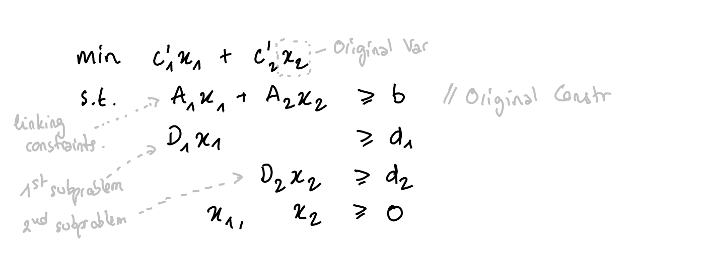

Decomposition & reformulation
Coluna is a framework to optimize mixed-integer programs that you can decompose. In other words, if you remove the linking constraints or linking variables from you program, you'll get sets of constraints (blocks) that you can solve independently.
Dantzig-Wolfe
Let's consider the following coefficient matrix that has a block diagonal structure in gray and some linking constraints in blue :

You penalize the violation of the linking constraints in the objective function. You can then solve the blocks independently.
The Dantzig-Wolfe reformulation gives raise to a master problem with an exponential number of variables. Coluna dynamically generates these variables by solving the subproblems. It's the column generation algorithm.
Let's consider the following original formulation in which we partition variables into two vectors $x_1$ and $x_2$ :

When you apply a Dantzig-Wofe decomposition to this formulation, Coluna reformulates it into the following master problem :

where $Q_1$ is the index-set of the solutions to the first subproblem and $Q_2$ is the index-set of the solutions to the second subproblem. The set of the solutions to the first and the second subproblems are $\{\tilde{x}^q_1\}_{q \in Q_1}$ and $\{\tilde{x}^q_2\}_{q \in Q_2}$ respectively. These solutions are expressed in terms of the original variables. The multiplicity of the subproblems is defined in the convexity constraints. Lower and upper multiplicity are $1$ by default.
At the beginning of the column generation algorithm, the master formulation does not have any master columns. Therefore, the master may be infeasible. To prevent this, Coluna adds a local artifical variable specific to each constraint of the master and a global artificial variable. Costs of articial and global artificial variables can be defined in Coluna.Params.
Subproblems take the following form (here, it's the first subproblem) :
where $\bar{c}$ is the reduced cost of the original variables computed by the column generation algorithm.
Dantzig-Wolfe with identical subproblems (alpha)
When some subproblems are identical (same coefficient matrix and right-hand side), you can avoid solving all of them at each iteration by defining only one subproblem and setting its multiplicity to the number of time it appears.
Let us see an example with Dantzig-Wolfe and a variant of the Generalized Assignment Problem.
Consider a set of machine type T = 1:nb_machine_types and a set of jobs J = 1:nb_jobs. A machine type t has a resource capacity Q[t] and the factory contains U[t] machines of type t. A job j assigned to a machine of type t has a cost c[t,j] and consumes w[t,j] resource units of the machine of type t.
Consider the following instance :
nb_machine_types = 2;
nb_jobs = 10;
J = 1:nb_jobs;
Q = [10, 15];
U = [3, 2]; # 3 machines of type 1 & 2 machines of type 2
c = [10 11 13 11 12 14 15 8 9 11; 20 21 23 21 22 24 25 18 19 21];
w = [4 4 5 4 4 3 4 5 6 5; 5 5 6 5 5 4 5 6 7 6];Here is the JuMP model to optimize this instance a classic solver :
using JuMP, GLPK;
T1 = [1, 2, 3]; # U[1] machines
T2 = [4, 5]; # U[2] machines
M = union(T1, T2);
m2t = [1, 1, 1, 2, 2]; # machine id -> type id
model = Model(GLPK.Optimizer);
@variable(model, x[M, J], Bin); # 1 if job j assigned to machine m
@constraint(model, cov[j in J], sum(x[m,j] for m in M) == 1);
@constraint(model, knp[m in M], sum(w[m2t[m],j] * x[m,j] for j in J) <= Q[m2t[m]]);
@objective(model, Min, sum(c[m2t[m],j] * x[m,j] for m in M, j in J));
optimize!(model);
objective_value(model)154.0You can decompose over the machines by defining an axis on M. However, if you want to take advantage of the identical subproblems, you must define the formulation as follows :
using BlockDecomposition, Coluna, JuMP, GLPK;
const BD = BlockDecomposition
coluna = optimizer_with_attributes(
Coluna.Optimizer,
"params" => Coluna.Params(
solver = Coluna.Algorithm.TreeSearchAlgorithm() # default BCP
),
"default_optimizer" => GLPK.Optimizer # GLPK for the master & the subproblems
);
@axis(T, 1:nb_machine_types);
model = BlockModel(coluna);
@variable(model, x[T, J], Bin); # 1 if job j assigned to machine m
@constraint(model, cov[j in J], sum(x[t,j] for t in T) == 1);
@constraint(model, knp[t in T], sum(w[t] * x[t,j] for j in J) <= Q[t]);
@objective(model, Min, sum(c[t,j] * x[t,j] for t in T, j in J));We assign jobs to a type of machine and we define one knapsack constraint for each type. This formulation cannot be solved as it stands with a commercial solver.
Then, we decompose and specify the multiplicity of each knapsack subproblem :
@dantzig_wolfe_decomposition(model, dec_on_types, T);
sps = getsubproblems(dec_on_types)
for t in T
specify!(sps[t], lower_multiplicity = 0, upper_multiplicity = U[t]);
end
getsubproblems(dec_on_types)2-element Vector{BlockDecomposition.SubproblemForm}:
Subproblem formulation for T = 1 contains : 0.0 <= multiplicity <= 3.0
Subproblem formulation for T = 2 contains : 0.0 <= multiplicity <= 2.0
We see that subproblem for machine type 1 has an upper multiplicity equals to 3, and the second subproblem for machine type 2 has an upper multiplicity equals to 2. It means that we can use at most 3 machines of type 1 and at most 2 machines of type 2.
We can then optimize
optimize!(model);Coluna
Version 0.6.1 | https://github.com/atoptima/Coluna.jl
***************************************************************************************
**** B&B tree root node
**** Local DB = -Inf, global bounds: [ -Inf , Inf ], time = 3.17 sec.
***************************************************************************************
<st= 1> <it= 1> <et=16.37> <mst= 1.14> <sp= 0.00> <cols= 2> <al= 0.02> <DB=50074.0000> <mlp=100000.0000> <PB=Inf>
<st= 1> <it= 2> <et=16.71> <mst= 0.08> <sp= 0.00> <cols= 2> <al= 0.10> <DB=20140.0000> <mlp=70057.0000> <PB=Inf>
<st= 1> <it= 3> <et=16.71> <mst= 0.00> <sp= 0.00> <cols= 2> <al= 0.09> <DB= 158.0000> <mlp=50079.0000> <PB=Inf>
<st= 1> <it= 4> <et=16.71> <mst= 0.00> <sp= 0.00> <cols= 2> <al= 0.09> <DB= 161.0000> <mlp=50079.0000> <PB=Inf>
<st= 1> <it= 5> <et=16.71> <mst= 0.00> <sp= 0.00> <cols= 2> <al= 0.09> <DB=-9820.5000> <mlp=40090.5000> <PB=Inf>
<st= 1> <it= 6> <et=16.71> <mst= 0.00> <sp= 0.00> <cols= 2> <al= 0.09> <DB=-26437.0000> <mlp=23464.0000> <PB=Inf>
<st= 1> <it= 7> <et=17.06> <mst= 0.00> <sp= 0.00> <cols= 2> <al= 0.00> <DB=-4473.3989> <mlp= 174.0000> <PB=Inf>
<st= 1> <it= 8> <et=17.06> <mst= 0.00> <sp= 0.00> <cols= 0> <al= 0.10> <DB= 154.0000> <mlp= 154.0000> <PB=Inf>
***************************************************************************************
**** B&B tree node N°3, parent N°1, depth 1, 1 untreated node
**** Local DB = 154.0000, global bounds: [ 154.0000 , 174.0000 ], time = 19.83 sec.
**** Branching constraint: x[2,1]<=0.0
***************************************************************************************
<st= 1> <it= 1> <et=20.06> <mst= 0.05> <sp= 0.00> <cols= 0> <al= 0.02> <DB= 154.0000> <mlp= 154.0000> <PB=174.0000>
***************************************************************************************
**** B&B tree node N°5, parent N°3, depth 2, 2 untreated nodes
**** Local DB = 154.0000, global bounds: [ 154.0000 , 174.0000 ], time = 20.10 sec.
**** Branching constraint: x[1,2]<=0.0
***************************************************************************************
<st= 1> <it= 1> <et=20.10> <mst= 0.00> <sp= 0.00> <cols= 2> <al= 0.02> <DB=-39766.0000> <mlp= 174.0000> <PB=174.0000>
<st= 1> <it= 2> <et=20.10> <mst= 0.00> <sp= 0.00> <cols= 2> <al= 0.10> <DB= 54.0000> <mlp= 174.0000> <PB=174.0000>
<st= 1> <it= 3> <et=20.11> <mst= 0.00> <sp= 0.00> <cols= 0> <al= 0.09> <DB= 154.0000> <mlp= 154.0000> <PB=174.0000>
***************************************************************************************
**** B&B tree node N°7, parent N°5, depth 3, 3 untreated nodes
**** Local DB = 154.0000, global bounds: [ 154.0000 , 174.0000 ], time = 20.11 sec.
**** Branching constraint: x[2,3]<=0.0
***************************************************************************************
<st= 1> <it= 1> <et=20.11> <mst= 0.00> <sp= 0.00> <cols= 1> <al= 0.02> <DB=-6512.6667> <mlp= 3487.3333> <PB=174.0000>
<st= 1> <it= 2> <et=20.11> <mst= 0.00> <sp= 0.00> <cols= 2> <al= 0.10> <DB=-27846.0000> <mlp= 1820.6667> <PB=174.0000>
<st= 1> <it= 3> <et=20.11> <mst= 0.00> <sp= 0.00> <cols= 2> <al= 0.09> <DB=-22036.0000> <mlp= 1820.6667> <PB=174.0000>
<st= 1> <it= 4> <et=20.11> <mst= 0.00> <sp= 0.00> <cols= 2> <al= 0.09> <DB=-14996.3333> <mlp= 154.0000> <PB=174.0000>
<st= 1> <it= 5> <et=20.11> <mst= 0.00> <sp= 0.00> <cols= 0> <al= 0.09> <DB= 154.0000> <mlp= 154.0000> <PB=174.0000>
***************************************************************************************
**** B&B tree node N°9, parent N°7, depth 4, 4 untreated nodes
**** Local DB = 154.0000, global bounds: [ 154.0000 , 174.0000 ], time = 20.11 sec.
**** Branching constraint: x[2,6]<=0.0
***************************************************************************************
<st= 1> <it= 1> <et=20.11> <mst= 0.00> <sp= 0.00> <cols= 2> <al= 0.02> <DB=-12346.0000> <mlp= 154.0000> <PB=174.0000>
<st= 1> <it= 2> <et=20.12> <mst= 0.00> <sp= 0.00> <cols= 0> <al= 0.10> <DB= 154.0000> <mlp= 154.0000> <PB=174.0000>
***************************************************************************************
**** B&B tree node N°11, parent N°9, depth 5, 5 untreated nodes
**** Local DB = 154.0000, global bounds: [ 154.0000 , 174.0000 ], time = 20.12 sec.
**** Branching constraint: x[2,9]<=0.0
***************************************************************************************
<st= 1> <it= 1> <et=20.12> <mst= 0.00> <sp= 0.00> <cols= 1> <al= 0.02> <DB=-6512.6667> <mlp= 3487.3333> <PB=174.0000>
<st= 1> <it= 2> <et=20.12> <mst= 0.00> <sp= 0.00> <cols= 0> <al= 0.10> <DB= 154.0000> <mlp= 154.0000> <PB=174.0000>
***************************************************************************************
**** B&B tree node N°13, parent N°11, depth 6, 6 untreated nodes
**** Local DB = 154.0000, global bounds: [ 154.0000 , 174.0000 ], time = 20.12 sec.
**** Branching constraint: x[1,7]<=0.0
***************************************************************************************
<st= 1> <it= 1> <et=20.12> <mst= 0.00> <sp= 0.00> <cols= 1> <al= 0.02> <DB=-9821.0000> <mlp= 174.0000> <PB=174.0000>
<st= 1> <it= 2> <et=20.13> <mst= 0.00> <sp= 0.00> <cols= 0> <al= 0.10> <DB= 154.0000> <mlp= 154.0000> <PB=174.0000>
***************************************************************************************
**** B&B tree node N°15, parent N°13, depth 7, 7 untreated nodes
**** Local DB = 154.0000, global bounds: [ 154.0000 , 174.0000 ], time = 20.13 sec.
**** Branching constraint: x[1,4]<=0.0
***************************************************************************************
<st= 1> <it= 1> <et=20.13> <mst= 0.00> <sp= 0.00> <cols= 1> <al= 0.02> <DB=-9825.0000> <mlp= 174.0000> <PB=174.0000>
<st= 1> <it= 2> <et=20.13> <mst= 0.00> <sp= 0.00> <cols= 0> <al= 0.10> <DB= 154.0000> <mlp= 154.0000> <PB=174.0000>
***************************************************************************************
**** B&B tree node N°17, parent N°15, depth 8, 8 untreated nodes
**** Local DB = 154.0000, global bounds: [ 154.0000 , 174.0000 ], time = 20.13 sec.
**** Branching constraint: x[1,8]<=0.0
***************************************************************************************
<st= 1> <it= 1> <et=20.13> <mst= 0.00> <sp= 0.00> <cols= 2> <al= 0.02> <DB=-22301.0000> <mlp= 174.0000> <PB=174.0000>
<st= 1> <it= 2> <et=20.13> <mst= 0.00> <sp= 0.00> <cols= 1> <al= 0.10> <DB= 147.3333> <mlp= 157.3333> <PB=174.0000>
<st= 1> <it= 3> <et=20.14> <mst= 0.00> <sp= 0.00> <cols= 0> <al= 0.09> <DB= 154.0000> <mlp= 154.0000> <PB=174.0000>
***************************************************************************************
**** B&B tree node N°19, parent N°17, depth 9, 9 untreated nodes
**** Local DB = 154.0000, global bounds: [ 154.0000 , 174.0000 ], time = 20.14 sec.
**** Branching constraint: PricingSetupVar_sp_5<=1.0
***************************************************************************************
<st= 1> <it= 1> <et=20.14> <mst= 0.00> <sp= 0.00> <cols= 1> <al= 0.02> <DB= 3487.3333> <mlp= 6820.6667> <PB=174.0000>
<st= 1> <it= 2> <et=20.14> <mst= 0.00> <sp= 0.00> <cols= 1> <al= 0.10> <DB= 187.3333> <mlp= 5154.0000> <PB=174.0000>
<st= 1> <it= 3> <et=20.14> <mst= 0.00> <sp= 0.00> <cols= 1> <al= 0.00> <DB= 807.3333> <mlp= 5154.0000> <PB=174.0000>
<st= 1> <it= 4> <et=20.14> <mst= 0.00> <sp= 0.00> <cols= 0> <al= 0.10> <DB= 3487.3333> <mlp= 3487.3333> <PB=174.0000>
# <st= 1> <it= 5> <et=20.57> <mst= 0.00> <sp= 0.00> <cols= 0> <al= 0.09> <DB= 3333.3333> <mlp= 3333.3333> <PB=174.0000>
***************************************************************************************
**** B&B tree node N°18, parent N°17, depth 9, 8 untreated nodes
**** Local DB = 154.0000, global bounds: [ 3333.3333 , 174.0000 ], time = 20.58 sec.
**** Branching constraint: PricingSetupVar_sp_5>=2.0
***************************************************************************************
<st= 1> <it= 1> <et=20.58> <mst= 0.00> <sp= 0.00> <cols= 2> <al= 0.02> <DB= 94.0000> <mlp= 174.0000> <PB=174.0000>
<st= 1> <it= 2> <et=20.59> <mst= 0.00> <sp= 0.00> <cols= 0> <al= 0.10> <DB= 154.0000> <mlp= 154.0000> <PB=174.0000>
┌ Warning: No candidate generated. No children will be generated. However, the node is not conquered.
└ @ Coluna.Branching ~/work/Coluna.jl/Coluna.jl/src/Branching/Branching.jl:304
***************************************************************************************
**** B&B tree node N°16, parent N°15, depth 8, 7 untreated nodes
**** Local DB = 154.0000, global bounds: [ 154.0000 , 174.0000 ], time = 20.61 sec.
**** Branching constraint: x[1,8]>=1.0
***************************************************************************************
<st= 1> <it= 1> <et=20.61> <mst= 0.00> <sp= 0.00> <cols= 2> <al= 0.02> <DB=-7846.0000> <mlp= 6154.0000> <PB=174.0000>
<st= 1> <it= 2> <et=20.62> <mst= 0.00> <sp= 0.00> <cols= 0> <al= 0.10> <DB= 154.0000> <mlp= 154.0000> <PB=174.0000>
***************************************************************************************
**** B&B tree node N°21, parent N°16, depth 9, 8 untreated nodes
**** Local DB = 154.0000, global bounds: [ 154.0000 , 174.0000 ], time = 20.62 sec.
**** Branching constraint: PricingSetupVar_sp_5<=1.0
***************************************************************************************
<st= 1> <it= 1> <et=20.62> <mst= 0.00> <sp= 0.00> <cols= 1> <al= 0.02> <DB= 2154.0000> <mlp= 6154.0000> <PB=174.0000>
<st= 1> <it= 2> <et=20.63> <mst= 0.00> <sp= 0.00> <cols= 0> <al= 0.10> <DB= 3487.3333> <mlp= 3487.3333> <PB=174.0000>
# <st= 1> <it= 3> <et=20.64> <mst= 0.00> <sp= 0.00> <cols= 0> <al= 0.09> <DB= 3333.3333> <mlp= 3333.3333> <PB=174.0000>
***************************************************************************************
**** B&B tree node N°20, parent N°16, depth 9, 7 untreated nodes
**** Local DB = 154.0000, global bounds: [ 3333.3333 , 174.0000 ], time = 20.64 sec.
**** Branching constraint: PricingSetupVar_sp_5>=2.0
***************************************************************************************
<st= 1> <it= 1> <et=20.64> <mst= 0.00> <sp= 0.00> <cols= 2> <al= 0.02> <DB=-9866.0000> <mlp= 3490.6667> <PB=174.0000>
<st= 1> <it= 2> <et=20.64> <mst= 0.00> <sp= 0.00> <cols= 0> <al= 0.10> <DB= 154.0000> <mlp= 154.0000> <PB=174.0000>
***************************************************************************************
**** B&B tree node N°23, parent N°20, depth 10, 8 untreated nodes
**** Local DB = 154.0000, global bounds: [ 154.0000 , 174.0000 ], time = 20.64 sec.
**** Branching constraint: x[2,5]<=0.0
***************************************************************************************
<st= 1> <it= 1> <et=20.64> <mst= 0.00> <sp= 0.00> <cols= 1> <al= 0.02> <DB=-3846.0000> <mlp= 2154.0000> <PB=174.0000>
<st= 1> <it= 2> <et=20.65> <mst= 0.00> <sp= 0.00> <cols= 0> <al= 0.10> <DB= 154.0000> <mlp= 154.0000> <PB=174.0000>
┌ Warning: No candidate generated. No children will be generated. However, the node is not conquered.
└ @ Coluna.Branching ~/work/Coluna.jl/Coluna.jl/src/Branching/Branching.jl:304
***************************************************************************************
**** B&B tree node N°22, parent N°20, depth 10, 7 untreated nodes
**** Local DB = 154.0000, global bounds: [ 154.0000 , 174.0000 ], time = 20.65 sec.
**** Branching constraint: x[2,5]>=1.0
***************************************************************************************
<st= 1> <it= 1> <et=20.65> <mst= 0.00> <sp= 0.00> <cols= 1> <al= 0.02> <DB=-9826.0000> <mlp= 5169.0000> <PB=174.0000>
<st= 1> <it= 2> <et=20.65> <mst= 0.00> <sp= 0.00> <cols= 1> <al= 0.10> <DB= 147.3333> <mlp= 157.3333> <PB=174.0000>
<st= 1> <it= 3> <et=20.65> <mst= 0.00> <sp= 0.00> <cols= 0> <al= 0.09> <DB= 154.0000> <mlp= 154.0000> <PB=174.0000>
┌ Warning: No candidate generated. No children will be generated. However, the node is not conquered.
└ @ Coluna.Branching ~/work/Coluna.jl/Coluna.jl/src/Branching/Branching.jl:304
***************************************************************************************
**** B&B tree node N°14, parent N°13, depth 7, 6 untreated nodes
**** Local DB = 154.0000, global bounds: [ 154.0000 , 174.0000 ], time = 20.65 sec.
**** Branching constraint: x[1,4]>=1.0
***************************************************************************************
<st= 1> <it= 1> <et=20.66> <mst= 0.00> <sp= 0.00> <cols= 2> <al= 0.02> <DB=-7346.0000> <mlp= 5154.0000> <PB=174.0000>
<st= 1> <it= 2> <et=20.66> <mst= 0.00> <sp= 0.00> <cols= 0> <al= 0.10> <DB= 154.0000> <mlp= 154.0000> <PB=174.0000>
***************************************************************************************
**** B&B tree node N°25, parent N°14, depth 8, 7 untreated nodes
**** Local DB = 154.0000, global bounds: [ 154.0000 , 174.0000 ], time = 20.66 sec.
**** Branching constraint: x[1,5]<=0.0
***************************************************************************************
<st= 1> <it= 1> <et=20.66> <mst= 0.00> <sp= 0.00> <cols= 0> <al= 0.02> <DB= 154.0000> <mlp= 154.0000> <PB=174.0000>
***************************************************************************************
**** B&B tree node N°27, parent N°25, depth 9, 8 untreated nodes
**** Local DB = 154.0000, global bounds: [ 154.0000 , 174.0000 ], time = 20.66 sec.
**** Branching constraint: x[1,8]<=0.0
***************************************************************************************
<st= 1> <it= 1> <et=20.71> <mst= 0.00> <sp= 0.00> <cols= 2> <al= 0.02> <DB=-16526.0000> <mlp= 3494.0000> <PB=174.0000>
<st= 1> <it= 2> <et=20.71> <mst= 0.00> <sp= 0.00> <cols= 1> <al= 0.10> <DB= 147.3333> <mlp= 160.6667> <PB=174.0000>
<st= 1> <it= 3> <et=20.71> <mst= 0.00> <sp= 0.00> <cols= 0> <al= 0.09> <DB= 154.0000> <mlp= 154.0000> <PB=174.0000>
***************************************************************************************
**** B&B tree node N°29, parent N°27, depth 10, 9 untreated nodes
**** Local DB = 154.0000, global bounds: [ 154.0000 , 174.0000 ], time = 20.71 sec.
**** Branching constraint: PricingSetupVar_sp_5<=1.0
***************************************************************************************
<st= 1> <it= 1> <et=20.71> <mst= 0.00> <sp= 0.00> <cols= 1> <al= 0.02> <DB= 2654.0000> <mlp= 5154.0000> <PB=174.0000>
<st= 1> <it= 2> <et=20.71> <mst= 0.00> <sp= 0.00> <cols= 1> <al= 0.10> <DB= 104.0000> <mlp= 5154.0000> <PB=174.0000>
<st= 1> <it= 3> <et=20.73> <mst= 0.00> <sp= 0.00> <cols= 0> <al= 0.09> <DB= 3487.3333> <mlp= 3487.3333> <PB=174.0000>
# <st= 1> <it= 4> <et=20.73> <mst= 0.00> <sp= 0.00> <cols= 0> <al= 0.09> <DB= 3333.3333> <mlp= 3333.3333> <PB=174.0000>
***************************************************************************************
**** B&B tree node N°28, parent N°27, depth 10, 8 untreated nodes
**** Local DB = 154.0000, global bounds: [ 3333.3333 , 174.0000 ], time = 20.73 sec.
**** Branching constraint: PricingSetupVar_sp_5>=2.0
***************************************************************************************
<st= 1> <it= 1> <et=20.74> <mst= 0.00> <sp= 0.00> <cols= 1> <al= 0.02> <DB=-6506.0000> <mlp= 3494.0000> <PB=174.0000>
<st= 1> <it= 2> <et=20.74> <mst= 0.00> <sp= 0.00> <cols= 0> <al= 0.10> <DB= 154.0000> <mlp= 154.0000> <PB=174.0000>
┌ Warning: No candidate generated. No children will be generated. However, the node is not conquered.
└ @ Coluna.Branching ~/work/Coluna.jl/Coluna.jl/src/Branching/Branching.jl:304
***************************************************************************************
**** B&B tree node N°26, parent N°25, depth 9, 7 untreated nodes
**** Local DB = 154.0000, global bounds: [ 154.0000 , 174.0000 ], time = 20.74 sec.
**** Branching constraint: x[1,8]>=1.0
***************************************************************************************
<st= 1> <it= 1> <et=20.74> <mst= 0.00> <sp= 0.00> <cols= 1> <al= 0.02> <DB=-6512.6667> <mlp= 5154.0000> <PB=174.0000>
<st= 1> <it= 2> <et=20.74> <mst= 0.00> <sp= 0.00> <cols= 1> <al= 0.10> <DB=-4879.3333> <mlp= 5154.0000> <PB=174.0000>
<st= 1> <it= 3> <et=20.75> <mst= 0.00> <sp= 0.00> <cols= 0> <al= 0.09> <DB= 154.0000> <mlp= 154.0000> <PB=174.0000>
***************************************************************************************
**** B&B tree node N°31, parent N°26, depth 10, 8 untreated nodes
**** Local DB = 154.0000, global bounds: [ 154.0000 , 174.0000 ], time = 20.75 sec.
**** Branching constraint: PricingSetupVar_sp_5<=1.0
***************************************************************************************
<st= 1> <it= 1> <et=20.75> <mst= 0.00> <sp= 0.00> <cols= 1> <al= 0.02> <DB= 144.0000> <mlp= 5154.0000> <PB=174.0000>
<st= 1> <it= 2> <et=20.75> <mst= 0.00> <sp= 0.00> <cols= 2> <al= 0.10> <DB= 234.4000> <mlp= 5144.0000> <PB=174.0000>
<st= 1> <it= 3> <et=20.75> <mst= 0.00> <sp= 0.00> <cols= 0> <al= 0.09> <DB= 3487.3333> <mlp= 3487.3333> <PB=174.0000>
# <st= 1> <it= 4> <et=20.76> <mst= 0.00> <sp= 0.00> <cols= 0> <al= 0.09> <DB= 3333.3333> <mlp= 3333.3333> <PB=174.0000>
***************************************************************************************
**** B&B tree node N°30, parent N°26, depth 10, 7 untreated nodes
**** Local DB = 154.0000, global bounds: [ 3333.3333 , 174.0000 ], time = 20.76 sec.
**** Branching constraint: PricingSetupVar_sp_5>=2.0
***************************************************************************************
<st= 1> <it= 1> <et=20.76> <mst= 0.00> <sp= 0.00> <cols= 2> <al= 0.02> <DB=-7366.0000> <mlp= 5154.0000> <PB=174.0000>
<st= 1> <it= 2> <et=20.76> <mst= 0.00> <sp= 0.00> <cols= 1> <al= 0.10> <DB=-9668.9600> <mlp= 154.0000> <PB=174.0000>
<st= 1> <it= 3> <et=20.77> <mst= 0.00> <sp= 0.00> <cols= 1> <al= 0.09> <DB=-4102.9600> <mlp= 154.0000> <PB=174.0000>
<st= 1> <it= 4> <et=20.77> <mst= 0.00> <sp= 0.00> <cols= 0> <al= 0.09> <DB= 154.0000> <mlp= 154.0000> <PB=174.0000>
┌ Warning: No candidate generated. No children will be generated. However, the node is not conquered.
└ @ Coluna.Branching ~/work/Coluna.jl/Coluna.jl/src/Branching/Branching.jl:304
***************************************************************************************
**** B&B tree node N°24, parent N°14, depth 8, 6 untreated nodes
**** Local DB = 154.0000, global bounds: [ 154.0000 , 174.0000 ], time = 20.77 sec.
**** Branching constraint: x[1,5]>=1.0
***************************************************************************************
<st= 1> <it= 1> <et=20.77> <mst= 0.00> <sp= 0.00> <cols= 1> <al= 0.02> <DB=-4846.0000> <mlp= 5154.0000> <PB=174.0000>
<st= 1> <it= 2> <et=20.77> <mst= 0.00> <sp= 0.00> <cols= 2> <al= 0.10> <DB=-9766.0000> <mlp= 154.0000> <PB=174.0000>
<st= 1> <it= 3> <et=20.77> <mst= 0.00> <sp= 0.00> <cols= 0> <al= 0.09> <DB= 154.0000> <mlp= 154.0000> <PB=174.0000>
***************************************************************************************
**** B&B tree node N°33, parent N°24, depth 9, 7 untreated nodes
**** Local DB = 154.0000, global bounds: [ 154.0000 , 174.0000 ], time = 20.77 sec.
**** Branching constraint: PricingSetupVar_sp_5<=1.0
***************************************************************************************
<st= 1> <it= 1> <et=20.78> <mst= 0.00> <sp= 0.00> <cols= 2> <al= 0.02> <DB=-2326.0000> <mlp= 5154.0000> <PB=174.0000>
<st= 1> <it= 2> <et=20.78> <mst= 0.00> <sp= 0.00> <cols= 1> <al= 0.10> <DB= 114.2000> <mlp= 5154.0000> <PB=174.0000>
<st= 1> <it= 3> <et=20.78> <mst= 0.00> <sp= 0.00> <cols= 1> <al= 0.09> <DB= 2654.0000> <mlp= 5154.0000> <PB=174.0000>
<st= 1> <it= 4> <et=20.78> <mst= 0.00> <sp= 0.00> <cols= 1> <al= 0.09> <DB= 378.5980> <mlp= 5144.0000> <PB=174.0000>
<st= 1> <it= 5> <et=20.78> <mst= 0.00> <sp= 0.00> <cols= 1> <al= 0.09> <DB= 247.9971> <mlp= 3487.3333> <PB=174.0000>
<st= 1> <it= 6> <et=20.79> <mst= 0.00> <sp= 0.00> <cols= 0> <al= 0.09> <DB= 3487.3333> <mlp= 3487.3333> <PB=174.0000>
# <st= 1> <it= 7> <et=20.80> <mst= 0.00> <sp= 0.00> <cols= 0> <al= 0.09> <DB= 3333.3333> <mlp= 3333.3333> <PB=174.0000>
***************************************************************************************
**** B&B tree node N°32, parent N°24, depth 9, 6 untreated nodes
**** Local DB = 154.0000, global bounds: [ 3333.3333 , 174.0000 ], time = 20.80 sec.
**** Branching constraint: PricingSetupVar_sp_5>=2.0
***************************************************************************************
<st= 1> <it= 1> <et=20.80> <mst= 0.00> <sp= 0.00> <cols= 2> <al= 0.02> <DB=-9846.0000> <mlp= 5154.0000> <PB=174.0000>
<st= 1> <it= 2> <et=20.80> <mst= 0.00> <sp= 0.00> <cols= 1> <al= 0.10> <DB=-4926.0000> <mlp= 5154.0000> <PB=174.0000>
<st= 1> <it= 3> <et=20.80> <mst= 0.00> <sp= 0.00> <cols= 0> <al= 0.09> <DB= 154.0000> <mlp= 154.0000> <PB=174.0000>
┌ Warning: No candidate generated. No children will be generated. However, the node is not conquered.
└ @ Coluna.Branching ~/work/Coluna.jl/Coluna.jl/src/Branching/Branching.jl:304
***************************************************************************************
**** B&B tree node N°12, parent N°11, depth 6, 5 untreated nodes
**** Local DB = 154.0000, global bounds: [ 154.0000 , 174.0000 ], time = 20.80 sec.
**** Branching constraint: x[1,7]>=1.0
***************************************************************************************
<st= 1> <it= 1> <et=20.80> <mst= 0.00> <sp= 0.00> <cols= 1> <al= 0.02> <DB=-6512.6667> <mlp= 3487.3333> <PB=174.0000>
<st= 1> <it= 2> <et=20.80> <mst= 0.00> <sp= 0.00> <cols= 1> <al= 0.10> <DB=-6412.6667> <mlp= 3487.3333> <PB=174.0000>
<st= 1> <it= 3> <et=20.80> <mst= 0.00> <sp= 0.00> <cols= 1> <al= 0.09> <DB=-8506.0000> <mlp= 1820.6667> <PB=174.0000>
<st= 1> <it= 4> <et=20.81> <mst= 0.00> <sp= 0.00> <cols= 0> <al= 0.09> <DB= 154.0000> <mlp= 154.0000> <PB=174.0000>
***************************************************************************************
**** B&B tree node N°35, parent N°12, depth 7, 6 untreated nodes
**** Local DB = 154.0000, global bounds: [ 154.0000 , 174.0000 ], time = 20.81 sec.
**** Branching constraint: x[1,5]<=0.0
***************************************************************************************
<st= 1> <it= 1> <et=20.81> <mst= 0.00> <sp= 0.00> <cols= 0> <al= 0.02> <DB= 154.0000> <mlp= 154.0000> <PB=174.0000>
***************************************************************************************
**** B&B tree node N°37, parent N°35, depth 8, 7 untreated nodes
**** Local DB = 154.0000, global bounds: [ 154.0000 , 174.0000 ], time = 20.81 sec.
**** Branching constraint: x[1,4]<=0.0
***************************************************************************************
<st= 1> <it= 1> <et=20.81> <mst= 0.00> <sp= 0.00> <cols= 1> <al= 0.02> <DB= 144.0000> <mlp= 159.0000> <PB=174.0000>
<st= 1> <it= 2> <et=20.82> <mst= 0.00> <sp= 0.00> <cols= 0> <al= 0.10> <DB= 154.0000> <mlp= 154.0000> <PB=174.0000>
***************************************************************************************
**** B&B tree node N°39, parent N°37, depth 9, 8 untreated nodes
**** Local DB = 154.0000, global bounds: [ 154.0000 , 174.0000 ], time = 20.82 sec.
**** Branching constraint: x[2,10]<=0.0
***************************************************************************************
<st= 1> <it= 1> <et=20.82> <mst= 0.00> <sp= 0.00> <cols= 2> <al= 0.02> <DB=-4837.0000> <mlp= 5144.0000> <PB=174.0000>
<st= 1> <it= 2> <et=20.82> <mst= 0.00> <sp= 0.00> <cols= 1> <al= 0.10> <DB=-6578.5533> <mlp= 3487.3333> <PB=174.0000>
<st= 1> <it= 3> <et=20.82> <mst= 0.00> <sp= 0.00> <cols= 1> <al= 0.09> <DB=-6835.2173> <mlp= 3487.3333> <PB=174.0000>
<st= 1> <it= 4> <et=20.82> <mst= 0.00> <sp= 0.00> <cols= 1> <al= 0.09> <DB=-6809.5449> <mlp= 3487.3333> <PB=174.0000>
<st= 1> <it= 5> <et=20.82> <mst= 0.00> <sp= 0.00> <cols= 0> <al= 0.09> <DB= 154.0000> <mlp= 154.0000> <PB=174.0000>
***************************************************************************************
**** B&B tree node N°41, parent N°39, depth 10, 9 untreated nodes
**** Local DB = 154.0000, global bounds: [ 154.0000 , 174.0000 ], time = 20.82 sec.
**** Branching constraint: PricingSetupVar_sp_5<=1.0
***************************************************************************************
<st= 1> <it= 1> <et=20.83> <mst= 0.00> <sp= 0.00> <cols= 0> <al= 0.02> <DB= 3487.3333> <mlp= 3487.3333> <PB=174.0000>
# <st= 1> <it= 2> <et=20.83> <mst= 0.00> <sp= 0.00> <cols= 0> <al= 0.10> <DB= 3333.3333> <mlp= 3333.3333> <PB=174.0000>
***************************************************************************************
**** B&B tree node N°40, parent N°39, depth 10, 8 untreated nodes
**** Local DB = 154.0000, global bounds: [ 3333.3333 , 174.0000 ], time = 20.83 sec.
**** Branching constraint: PricingSetupVar_sp_5>=2.0
***************************************************************************************
<st= 1> <it= 1> <et=20.84> <mst= 0.00> <sp= 0.00> <cols= 1> <al= 0.02> <DB=-3179.3333> <mlp= 6820.6667> <PB=174.0000>
<st= 1> <it= 2> <et=20.84> <mst= 0.00> <sp= 0.00> <cols= 0> <al= 0.10> <DB= 154.0000> <mlp= 154.0000> <PB=174.0000>
┌ Warning: No candidate generated. No children will be generated. However, the node is not conquered.
└ @ Coluna.Branching ~/work/Coluna.jl/Coluna.jl/src/Branching/Branching.jl:304
***************************************************************************************
**** B&B tree node N°38, parent N°37, depth 9, 7 untreated nodes
**** Local DB = 154.0000, global bounds: [ 154.0000 , 174.0000 ], time = 20.84 sec.
**** Branching constraint: x[2,10]>=1.0
***************************************************************************************
<st= 1> <it= 1> <et=20.84> <mst= 0.00> <sp= 0.00> <cols= 1> <al= 0.02> <DB= 144.0000> <mlp= 159.0000> <PB=174.0000>
<st= 1> <it= 2> <et=20.84> <mst= 0.00> <sp= 0.00> <cols= 0> <al= 0.10> <DB= 154.0000> <mlp= 154.0000> <PB=174.0000>
***************************************************************************************
**** B&B tree node N°43, parent N°38, depth 10, 8 untreated nodes
**** Local DB = 154.0000, global bounds: [ 154.0000 , 174.0000 ], time = 20.84 sec.
**** Branching constraint: PricingSetupVar_sp_5<=1.0
***************************************************************************************
<st= 1> <it= 1> <et=20.88> <mst= 0.00> <sp= 0.04> <cols= 0> <al= 0.02> <DB= 3487.3333> <mlp= 3487.3333> <PB=174.0000>
# <st= 1> <it= 2> <et=20.89> <mst= 0.00> <sp= 0.00> <cols= 0> <al= 0.10> <DB= 3333.3333> <mlp= 3333.3333> <PB=174.0000>
***************************************************************************************
**** B&B tree node N°42, parent N°38, depth 10, 7 untreated nodes
**** Local DB = 154.0000, global bounds: [ 3333.3333 , 174.0000 ], time = 20.89 sec.
**** Branching constraint: PricingSetupVar_sp_5>=2.0
***************************************************************************************
<st= 1> <it= 1> <et=20.89> <mst= 0.00> <sp= 0.00> <cols= 2> <al= 0.02> <DB=-9826.0000> <mlp= 3497.3333> <PB=174.0000>
<st= 1> <it= 2> <et=20.89> <mst= 0.00> <sp= 0.00> <cols= 0> <al= 0.10> <DB= 154.0000> <mlp= 154.0000> <PB=174.0000>
┌ Warning: No candidate generated. No children will be generated. However, the node is not conquered.
└ @ Coluna.Branching ~/work/Coluna.jl/Coluna.jl/src/Branching/Branching.jl:304
***************************************************************************************
**** B&B tree node N°36, parent N°35, depth 8, 6 untreated nodes
**** Local DB = 154.0000, global bounds: [ 154.0000 , 174.0000 ], time = 20.89 sec.
**** Branching constraint: x[1,4]>=1.0
***************************************************************************************
<st= 1> <it= 1> <et=20.90> <mst= 0.00> <sp= 0.00> <cols= 2> <al= 0.02> <DB=-4856.0000> <mlp= 5144.0000> <PB=174.0000>
<st= 1> <it= 2> <et=20.90> <mst= 0.00> <sp= 0.00> <cols= 1> <al= 0.10> <DB=-6578.5333> <mlp= 3487.3333> <PB=174.0000>
<st= 1> <it= 3> <et=20.90> <mst= 0.00> <sp= 0.00> <cols= 1> <al= 0.09> <DB=-6835.4133> <mlp= 3487.3333> <PB=174.0000>
<st= 1> <it= 4> <et=20.90> <mst= 0.00> <sp= 0.00> <cols= 1> <al= 0.09> <DB=-6809.7253> <mlp= 3487.3333> <PB=174.0000>
<st= 1> <it= 5> <et=20.90> <mst= 0.00> <sp= 0.00> <cols= 1> <al= 0.09> <DB=-6812.2941> <mlp= 3487.3333> <PB=174.0000>
<st= 1> <it= 6> <et=20.90> <mst= 0.00> <sp= 0.00> <cols= 0> <al= 0.09> <DB= 154.0000> <mlp= 154.0000> <PB=174.0000>
***************************************************************************************
**** B&B tree node N°45, parent N°36, depth 9, 7 untreated nodes
**** Local DB = 154.0000, global bounds: [ 154.0000 , 174.0000 ], time = 20.90 sec.
**** Branching constraint: PricingSetupVar_sp_5<=1.0
***************************************************************************************
<st= 1> <it= 1> <et=20.91> <mst= 0.00> <sp= 0.00> <cols= 0> <al= 0.02> <DB= 3487.3333> <mlp= 3487.3333> <PB=174.0000>
# <st= 1> <it= 2> <et=20.91> <mst= 0.00> <sp= 0.00> <cols= 0> <al= 0.10> <DB= 3333.3333> <mlp= 3333.3333> <PB=174.0000>
***************************************************************************************
**** B&B tree node N°44, parent N°36, depth 9, 6 untreated nodes
**** Local DB = 154.0000, global bounds: [ 3333.3333 , 174.0000 ], time = 20.91 sec.
**** Branching constraint: PricingSetupVar_sp_5>=2.0
***************************************************************************************
<st= 1> <it= 1> <et=20.91> <mst= 0.00> <sp= 0.00> <cols= 1> <al= 0.02> <DB=-3179.3333> <mlp= 6820.6667> <PB=174.0000>
<st= 1> <it= 2> <et=20.92> <mst= 0.00> <sp= 0.00> <cols= 0> <al= 0.10> <DB= 154.0000> <mlp= 154.0000> <PB=174.0000>
┌ Warning: No candidate generated. No children will be generated. However, the node is not conquered.
└ @ Coluna.Branching ~/work/Coluna.jl/Coluna.jl/src/Branching/Branching.jl:304
***************************************************************************************
**** B&B tree node N°34, parent N°12, depth 7, 5 untreated nodes
**** Local DB = 154.0000, global bounds: [ 154.0000 , 174.0000 ], time = 20.92 sec.
**** Branching constraint: x[1,5]>=1.0
***************************************************************************************
<st= 1> <it= 1> <et=20.92> <mst= 0.00> <sp= 0.00> <cols= 2> <al= 0.02> <DB= 124.0000> <mlp= 5144.0000> <PB=174.0000>
<st= 1> <it= 2> <et=20.92> <mst= 0.00> <sp= 0.00> <cols= 1> <al= 0.10> <DB=-4736.4000> <mlp= 5144.0000> <PB=174.0000>
<st= 1> <it= 3> <et=20.92> <mst= 0.00> <sp= 0.00> <cols= 1> <al= 0.09> <DB=-2849.5933> <mlp= 154.0000> <PB=174.0000>
<st= 1> <it= 4> <et=20.92> <mst= 0.00> <sp= 0.00> <cols= 1> <al= 0.09> <DB=-2875.3073> <mlp= 154.0000> <PB=174.0000>
<st= 1> <it= 5> <et=20.93> <mst= 0.00> <sp= 0.00> <cols= 0> <al= 0.09> <DB= 154.0000> <mlp= 154.0000> <PB=174.0000>
┌ Warning: No candidate generated. No children will be generated. However, the node is not conquered.
└ @ Coluna.Branching ~/work/Coluna.jl/Coluna.jl/src/Branching/Branching.jl:304
***************************************************************************************
**** B&B tree node N°10, parent N°9, depth 5, 4 untreated nodes
**** Local DB = 154.0000, global bounds: [ 154.0000 , 174.0000 ], time = 20.93 sec.
**** Branching constraint: x[2,9]>=1.0
***************************************************************************************
<st= 1> <it= 1> <et=20.93> <mst= 0.00> <sp= 0.00> <cols= 0> <al= 0.02> <DB= 154.0000> <mlp= 154.0000> <PB=174.0000>
***************************************************************************************
**** B&B tree node N°47, parent N°10, depth 6, 5 untreated nodes
**** Local DB = 154.0000, global bounds: [ 154.0000 , 174.0000 ], time = 20.93 sec.
**** Branching constraint: x[2,4]<=0.0
***************************************************************************************
<st= 1> <it= 1> <et=20.93> <mst= 0.00> <sp= 0.00> <cols= 2> <al= 0.02> <DB=-13816.6000> <mlp= 4145.6000> <PB=174.0000>
<st= 1> <it= 2> <et=20.93> <mst= 0.00> <sp= 0.00> <cols= 0> <al= 0.10> <DB= 154.0000> <mlp= 154.0000> <PB=174.0000>
***************************************************************************************
**** B&B tree node N°49, parent N°47, depth 7, 6 untreated nodes
**** Local DB = 154.0000, global bounds: [ 154.0000 , 174.0000 ], time = 20.94 sec.
**** Branching constraint: x[1,7]<=0.0
***************************************************************************************
<st= 1> <it= 1> <et=20.94> <mst= 0.00> <sp= 0.00> <cols= 2> <al= 0.02> <DB=-19826.0000> <mlp= 174.0000> <PB=174.0000>
<st= 1> <it= 2> <et=20.94> <mst= 0.00> <sp= 0.00> <cols= 2> <al= 0.10> <DB=-21251.3200> <mlp= 174.0000> <PB=174.0000>
<st= 1> <it= 3> <et=20.94> <mst= 0.00> <sp= 0.00> <cols= 1> <al= 0.09> <DB= 144.0000> <mlp= 159.0000> <PB=174.0000>
<st= 1> <it= 4> <et=20.94> <mst= 0.00> <sp= 0.00> <cols= 0> <al= 0.09> <DB= 154.0000> <mlp= 154.0000> <PB=174.0000>
***************************************************************************************
**** B&B tree node N°51, parent N°49, depth 8, 7 untreated nodes
**** Local DB = 154.0000, global bounds: [ 154.0000 , 174.0000 ], time = 20.94 sec.
**** Branching constraint: x[2,5]<=0.0
***************************************************************************************
<st= 1> <it= 1> <et=20.95> <mst= 0.00> <sp= 0.00> <cols= 2> <al= 0.02> <DB=-13155.3333> <mlp= 3487.3333> <PB=174.0000>
<st= 1> <it= 2> <et=20.95> <mst= 0.00> <sp= 0.00> <cols= 0> <al= 0.10> <DB= 154.0000> <mlp= 154.0000> <PB=174.0000>
***************************************************************************************
**** B&B tree node N°53, parent N°51, depth 9, 8 untreated nodes
**** Local DB = 154.0000, global bounds: [ 154.0000 , 174.0000 ], time = 20.95 sec.
**** Branching constraint: x[2,8]<=0.0
***************************************************************************************
<st= 1> <it= 1> <et=20.95> <mst= 0.00> <sp= 0.00> <cols= 2> <al= 0.02> <DB=-9826.0000> <mlp= 3487.3333> <PB=174.0000>
<st= 1> <it= 2> <et=20.95> <mst= 0.00> <sp= 0.00> <cols= 1> <al= 0.10> <DB=-6545.2000> <mlp= 3487.3333> <PB=174.0000>
<st= 1> <it= 3> <et=20.95> <mst= 0.00> <sp= 0.00> <cols= 1> <al= 0.09> <DB=-3179.3333> <mlp= 3487.3333> <PB=174.0000>
<st= 1> <it= 4> <et=20.95> <mst= 0.00> <sp= 0.00> <cols= 1> <al= 0.09> <DB=-9224.9963> <mlp= 154.0000> <PB=174.0000>
<st= 1> <it= 5> <et=20.96> <mst= 0.00> <sp= 0.00> <cols= 0> <al= 0.09> <DB= 154.0000> <mlp= 154.0000> <PB=174.0000>
***************************************************************************************
**** B&B tree node N°55, parent N°53, depth 10, 9 untreated nodes
**** Local DB = 154.0000, global bounds: [ 154.0000 , 174.0000 ], time = 20.96 sec.
**** Branching constraint: PricingSetupVar_sp_5<=1.0
***************************************************************************************
<st= 1> <it= 1> <et=20.96> <mst= 0.00> <sp= 0.00> <cols= 1> <al= 0.02> <DB= 2649.0000> <mlp= 5144.0000> <PB=174.0000>
<st= 1> <it= 2> <et=20.96> <mst= 0.00> <sp= 0.00> <cols= 1> <al= 0.10> <DB= 203.9000> <mlp= 5144.0000> <PB=174.0000>
<st= 1> <it= 3> <et=20.96> <mst= 0.00> <sp= 0.00> <cols= 1> <al= 0.09> <DB= 2649.0000> <mlp= 5144.0000> <PB=174.0000>
<st= 1> <it= 4> <et=20.96> <mst= 0.00> <sp= 0.00> <cols= 1> <al= 0.09> <DB= 379.0490> <mlp= 5144.0000> <PB=174.0000>
<st= 1> <it= 5> <et=20.97> <mst= 0.00> <sp= 0.00> <cols= 0> <al= 0.09> <DB= 3487.3333> <mlp= 3487.3333> <PB=174.0000>
# <st= 1> <it= 6> <et=20.98> <mst= 0.00> <sp= 0.00> <cols= 0> <al= 0.09> <DB= 3333.3333> <mlp= 3333.3333> <PB=174.0000>
***************************************************************************************
**** B&B tree node N°54, parent N°53, depth 10, 8 untreated nodes
**** Local DB = 154.0000, global bounds: [ 3333.3333 , 174.0000 ], time = 20.98 sec.
**** Branching constraint: PricingSetupVar_sp_5>=2.0
***************************************************************************************
<st= 1> <it= 1> <et=20.98> <mst= 0.00> <sp= 0.00> <cols= 1> <al= 0.02> <DB=-4846.0000> <mlp= 5154.0000> <PB=174.0000>
<st= 1> <it= 2> <et=20.98> <mst= 0.00> <sp= 0.00> <cols= 0> <al= 0.10> <DB= 154.0000> <mlp= 154.0000> <PB=174.0000>
┌ Warning: No candidate generated. No children will be generated. However, the node is not conquered.
└ @ Coluna.Branching ~/work/Coluna.jl/Coluna.jl/src/Branching/Branching.jl:304
***************************************************************************************
**** B&B tree node N°52, parent N°51, depth 9, 7 untreated nodes
**** Local DB = 154.0000, global bounds: [ 154.0000 , 174.0000 ], time = 20.98 sec.
**** Branching constraint: x[2,8]>=1.0
***************************************************************************************
<st= 1> <it= 1> <et=20.99> <mst= 0.00> <sp= 0.00> <cols= 1> <al= 0.02> <DB= 144.0000> <mlp= 159.0000> <PB=174.0000>
<st= 1> <it= 2> <et=20.99> <mst= 0.00> <sp= 0.00> <cols= 1> <al= 0.10> <DB= 144.3000> <mlp= 159.0000> <PB=174.0000>
<st= 1> <it= 3> <et=20.99> <mst= 0.00> <sp= 0.00> <cols= 0> <al= 0.09> <DB= 154.0000> <mlp= 154.0000> <PB=174.0000>
***************************************************************************************
**** B&B tree node N°57, parent N°52, depth 10, 8 untreated nodes
**** Local DB = 154.0000, global bounds: [ 154.0000 , 174.0000 ], time = 20.99 sec.
**** Branching constraint: PricingSetupVar_sp_5<=1.0
***************************************************************************************
<st= 1> <it= 1> <et=21.03> <mst= 0.00> <sp= 0.00> <cols= 0> <al= 0.02> <DB= 3487.3333> <mlp= 3487.3333> <PB=174.0000>
# <st= 1> <it= 2> <et=21.03> <mst= 0.00> <sp= 0.00> <cols= 0> <al= 0.10> <DB= 3333.3333> <mlp= 3333.3333> <PB=174.0000>
***************************************************************************************
**** B&B tree node N°56, parent N°52, depth 10, 7 untreated nodes
**** Local DB = 154.0000, global bounds: [ 3333.3333 , 174.0000 ], time = 21.04 sec.
**** Branching constraint: PricingSetupVar_sp_5>=2.0
***************************************************************************************
<st= 1> <it= 1> <et=21.04> <mst= 0.00> <sp= 0.00> <cols= 1> <al= 0.02> <DB=-4841.0000> <mlp= 5159.0000> <PB=174.0000>
<st= 1> <it= 2> <et=21.04> <mst= 0.00> <sp= 0.00> <cols= 0> <al= 0.10> <DB= 154.0000> <mlp= 154.0000> <PB=174.0000>
┌ Warning: No candidate generated. No children will be generated. However, the node is not conquered.
└ @ Coluna.Branching ~/work/Coluna.jl/Coluna.jl/src/Branching/Branching.jl:304
***************************************************************************************
**** B&B tree node N°50, parent N°49, depth 8, 6 untreated nodes
**** Local DB = 154.0000, global bounds: [ 154.0000 , 174.0000 ], time = 21.04 sec.
**** Branching constraint: x[2,5]>=1.0
***************************************************************************************
<st= 1> <it= 1> <et=21.04> <mst= 0.00> <sp= 0.00> <cols= 2> <al= 0.02> <DB=-9871.0000> <mlp= 159.0000> <PB=174.0000>
<st= 1> <it= 2> <et=21.05> <mst= 0.00> <sp= 0.00> <cols= 0> <al= 0.10> <DB= 154.0000> <mlp= 154.0000> <PB=174.0000>
***************************************************************************************
**** B&B tree node N°59, parent N°50, depth 9, 7 untreated nodes
**** Local DB = 154.0000, global bounds: [ 154.0000 , 174.0000 ], time = 21.05 sec.
**** Branching constraint: PricingSetupVar_sp_5<=1.0
***************************************************************************************
<st= 1> <it= 1> <et=21.05> <mst= 0.00> <sp= 0.00> <cols= 0> <al= 0.02> <DB= 3487.3333> <mlp= 3487.3333> <PB=174.0000>
# <st= 1> <it= 2> <et=21.06> <mst= 0.00> <sp= 0.00> <cols= 0> <al= 0.10> <DB= 3333.3333> <mlp= 3333.3333> <PB=174.0000>
***************************************************************************************
**** B&B tree node N°58, parent N°50, depth 9, 6 untreated nodes
**** Local DB = 154.0000, global bounds: [ 3333.3333 , 174.0000 ], time = 21.06 sec.
**** Branching constraint: PricingSetupVar_sp_5>=2.0
***************************************************************************************
<st= 1> <it= 1> <et=21.06> <mst= 0.00> <sp= 0.00> <cols= 2> <al= 0.02> <DB=-16472.6667> <mlp= 174.0000> <PB=174.0000>
<st= 1> <it= 2> <et=21.06> <mst= 0.00> <sp= 0.00> <cols= 0> <al= 0.10> <DB= 154.0000> <mlp= 154.0000> <PB=174.0000>
┌ Warning: No candidate generated. No children will be generated. However, the node is not conquered.
└ @ Coluna.Branching ~/work/Coluna.jl/Coluna.jl/src/Branching/Branching.jl:304
***************************************************************************************
**** B&B tree node N°48, parent N°47, depth 7, 5 untreated nodes
**** Local DB = 154.0000, global bounds: [ 154.0000 , 174.0000 ], time = 21.07 sec.
**** Branching constraint: x[1,7]>=1.0
***************************************************************************************
<st= 1> <it= 1> <et=21.07> <mst= 0.00> <sp= 0.00> <cols= 1> <al= 0.02> <DB=-6512.6667> <mlp= 3487.3333> <PB=174.0000>
<st= 1> <it= 2> <et=21.07> <mst= 0.00> <sp= 0.00> <cols= 1> <al= 0.10> <DB=-6412.6667> <mlp= 3487.3333> <PB=174.0000>
<st= 1> <it= 3> <et=21.07> <mst= 0.00> <sp= 0.00> <cols= 1> <al= 0.09> <DB=-6512.6667> <mlp= 3487.3333> <PB=174.0000>
<st= 1> <it= 4> <et=21.07> <mst= 0.00> <sp= 0.00> <cols= 1> <al= 0.09> <DB=-8480.0000> <mlp= 1820.6667> <PB=174.0000>
<st= 1> <it= 5> <et=21.07> <mst= 0.00> <sp= 0.00> <cols= 0> <al= 0.09> <DB= 154.0000> <mlp= 154.0000> <PB=174.0000>
***************************************************************************************
**** B&B tree node N°61, parent N°48, depth 8, 6 untreated nodes
**** Local DB = 154.0000, global bounds: [ 154.0000 , 174.0000 ], time = 21.07 sec.
**** Branching constraint: x[1,8]<=0.0
***************************************************************************************
<st= 1> <it= 1> <et=21.08> <mst= 0.00> <sp= 0.00> <cols= 2> <al= 0.02> <DB= 124.0000> <mlp= 164.0000> <PB=174.0000>
<st= 1> <it= 2> <et=21.08> <mst= 0.00> <sp= 0.00> <cols= 0> <al= 0.10> <DB= 154.0000> <mlp= 154.0000> <PB=174.0000>
***************************************************************************************
**** B&B tree node N°63, parent N°61, depth 9, 7 untreated nodes
**** Local DB = 154.0000, global bounds: [ 154.0000 , 174.0000 ], time = 21.08 sec.
**** Branching constraint: x[2,10]<=0.0
***************************************************************************************
<st= 1> <it= 1> <et=21.08> <mst= 0.00> <sp= 0.00> <cols= 2> <al= 0.02> <DB=-4875.0000> <mlp= 5144.0000> <PB=174.0000>
<st= 1> <it= 2> <et=21.08> <mst= 0.00> <sp= 0.00> <cols= 1> <al= 0.10> <DB=-6579.1233> <mlp= 3487.3333> <PB=174.0000>
<st= 1> <it= 3> <et=21.09> <mst= 0.00> <sp= 0.00> <cols= 1> <al= 0.09> <DB=-3829.6777> <mlp= 3487.3333> <PB=174.0000>
<st= 1> <it= 4> <et=21.09> <mst= 0.00> <sp= 0.00> <cols= 0> <al= 0.09> <DB= 154.0000> <mlp= 154.0000> <PB=174.0000>
***************************************************************************************
**** B&B tree node N°65, parent N°63, depth 10, 8 untreated nodes
**** Local DB = 154.0000, global bounds: [ 154.0000 , 174.0000 ], time = 21.09 sec.
**** Branching constraint: PricingSetupVar_sp_5<=1.0
***************************************************************************************
<st= 1> <it= 1> <et=21.09> <mst= 0.00> <sp= 0.00> <cols= 1> <al= 0.02> <DB= 154.0000> <mlp= 5144.0000> <PB=174.0000>
<st= 1> <it= 2> <et=21.09> <mst= 0.00> <sp= 0.00> <cols= 1> <al= 0.10> <DB= 2649.0000> <mlp= 5144.0000> <PB=174.0000>
<st= 1> <it= 3> <et=21.09> <mst= 0.00> <sp= 0.00> <cols= 1> <al= 0.09> <DB= 396.5500> <mlp= 5144.0000> <PB=174.0000>
<st= 1> <it= 4> <et=21.10> <mst= 0.00> <sp= 0.00> <cols= 1> <al= 0.09> <DB= 379.0490> <mlp= 5144.0000> <PB=174.0000>
<st= 1> <it= 5> <et=21.10> <mst= 0.00> <sp= 0.00> <cols= 1> <al= 0.09> <DB= 380.9951> <mlp= 5144.0000> <PB=174.0000>
<st= 1> <it= 6> <et=21.11> <mst= 0.00> <sp= 0.00> <cols= 0> <al= 0.09> <DB= 3487.3333> <mlp= 3487.3333> <PB=174.0000>
# <st= 1> <it= 7> <et=21.11> <mst= 0.00> <sp= 0.00> <cols= 0> <al= 0.09> <DB= 3333.3333> <mlp= 3333.3333> <PB=174.0000>
***************************************************************************************
**** B&B tree node N°64, parent N°63, depth 10, 7 untreated nodes
**** Local DB = 154.0000, global bounds: [ 3333.3333 , 174.0000 ], time = 21.11 sec.
**** Branching constraint: PricingSetupVar_sp_5>=2.0
***************************************************************************************
<st= 1> <it= 1> <et=21.12> <mst= 0.00> <sp= 0.00> <cols= 1> <al= 0.02> <DB=-7346.0000> <mlp= 5154.0000> <PB=174.0000>
<st= 1> <it= 2> <et=21.12> <mst= 0.00> <sp= 0.00> <cols= 1> <al= 0.10> <DB=-4946.0000> <mlp= 5154.0000> <PB=174.0000>
<st= 1> <it= 3> <et=21.12> <mst= 0.00> <sp= 0.00> <cols= 1> <al= 0.00> <DB=-7722.6667> <mlp= 154.0000> <PB=174.0000>
<st= 1> <it= 4> <et=21.12> <mst= 0.00> <sp= 0.00> <cols= 0> <al= 0.10> <DB= 154.0000> <mlp= 154.0000> <PB=174.0000>
┌ Warning: No candidate generated. No children will be generated. However, the node is not conquered.
└ @ Coluna.Branching ~/work/Coluna.jl/Coluna.jl/src/Branching/Branching.jl:304
***************************************************************************************
**** B&B tree node N°62, parent N°61, depth 9, 6 untreated nodes
**** Local DB = 154.0000, global bounds: [ 154.0000 , 174.0000 ], time = 21.12 sec.
**** Branching constraint: x[2,10]>=1.0
***************************************************************************************
<st= 1> <it= 1> <et=21.12> <mst= 0.00> <sp= 0.00> <cols= 1> <al= 0.02> <DB= 144.0000> <mlp= 159.0000> <PB=174.0000>
<st= 1> <it= 2> <et=21.12> <mst= 0.00> <sp= 0.00> <cols= 0> <al= 0.10> <DB= 154.0000> <mlp= 154.0000> <PB=174.0000>
***************************************************************************************
**** B&B tree node N°67, parent N°62, depth 10, 7 untreated nodes
**** Local DB = 154.0000, global bounds: [ 154.0000 , 174.0000 ], time = 21.13 sec.
**** Branching constraint: PricingSetupVar_sp_5<=1.0
***************************************************************************************
<st= 1> <it= 1> <et=21.15> <mst= 0.00> <sp= 0.00> <cols= 0> <al= 0.02> <DB= 3487.3333> <mlp= 3487.3333> <PB=174.0000>
# <st= 1> <it= 2> <et=21.15> <mst= 0.00> <sp= 0.00> <cols= 0> <al= 0.10> <DB= 3333.3333> <mlp= 3333.3333> <PB=174.0000>
***************************************************************************************
**** B&B tree node N°66, parent N°62, depth 10, 6 untreated nodes
**** Local DB = 154.0000, global bounds: [ 3333.3333 , 174.0000 ], time = 21.15 sec.
**** Branching constraint: PricingSetupVar_sp_5>=2.0
***************************************************************************************
<st= 1> <it= 1> <et=21.16> <mst= 0.00> <sp= 0.00> <cols= 2> <al= 0.02> <DB=-9826.0000> <mlp= 3497.3333> <PB=174.0000>
<st= 1> <it= 2> <et=21.16> <mst= 0.00> <sp= 0.00> <cols= 0> <al= 0.10> <DB= 154.0000> <mlp= 154.0000> <PB=174.0000>
┌ Warning: No candidate generated. No children will be generated. However, the node is not conquered.
└ @ Coluna.Branching ~/work/Coluna.jl/Coluna.jl/src/Branching/Branching.jl:304
***************************************************************************************
**** B&B tree node N°60, parent N°48, depth 8, 5 untreated nodes
**** Local DB = 154.0000, global bounds: [ 154.0000 , 174.0000 ], time = 21.16 sec.
**** Branching constraint: x[1,8]>=1.0
***************************************************************************************
<st= 1> <it= 1> <et=21.16> <mst= 0.00> <sp= 0.00> <cols= 2> <al= 0.02> <DB= 114.0000> <mlp= 5144.0000> <PB=174.0000>
<st= 1> <it= 2> <et=21.16> <mst= 0.00> <sp= 0.00> <cols= 1> <al= 0.10> <DB=-6367.0667> <mlp= 154.0000> <PB=174.0000>
<st= 1> <it= 3> <et=21.16> <mst= 0.00> <sp= 0.00> <cols= 1> <al= 0.09> <DB=-2850.5733> <mlp= 154.0000> <PB=174.0000>
<st= 1> <it= 4> <et=21.17> <mst= 0.00> <sp= 0.00> <cols= 1> <al= 0.09> <DB=-2876.2093> <mlp= 154.0000> <PB=174.0000>
<st= 1> <it= 5> <et=21.17> <mst= 0.00> <sp= 0.00> <cols= 1> <al= 0.09> <DB=-2873.6457> <mlp= 154.0000> <PB=174.0000>
<st= 1> <it= 6> <et=21.17> <mst= 0.00> <sp= 0.00> <cols= 0> <al= 0.09> <DB= 154.0000> <mlp= 154.0000> <PB=174.0000>
┌ Warning: No candidate generated. No children will be generated. However, the node is not conquered.
└ @ Coluna.Branching ~/work/Coluna.jl/Coluna.jl/src/Branching/Branching.jl:304
***************************************************************************************
**** B&B tree node N°46, parent N°10, depth 6, 4 untreated nodes
**** Local DB = 154.0000, global bounds: [ 154.0000 , 174.0000 ], time = 21.17 sec.
**** Branching constraint: x[2,4]>=1.0
***************************************************************************************
<st= 1> <it= 1> <et=21.18> <mst= 0.00> <sp= 0.00> <cols= 1> <al= 0.02> <DB= 144.0000> <mlp= 159.0000> <PB=174.0000>
<st= 1> <it= 2> <et=21.18> <mst= 0.00> <sp= 0.00> <cols= 0> <al= 0.10> <DB= 154.0000> <mlp= 154.0000> <PB=174.0000>
***************************************************************************************
**** B&B tree node N°69, parent N°46, depth 7, 5 untreated nodes
**** Local DB = 154.0000, global bounds: [ 154.0000 , 174.0000 ], time = 21.18 sec.
**** Branching constraint: x[1,5]<=0.0
***************************************************************************************
<st= 1> <it= 1> <et=21.18> <mst= 0.00> <sp= 0.00> <cols= 2> <al= 0.02> <DB=-6542.6667> <mlp= 3502.3333> <PB=174.0000>
<st= 1> <it= 2> <et=21.18> <mst= 0.00> <sp= 0.00> <cols= 1> <al= 0.10> <DB= -51.6000> <mlp= 159.0000> <PB=174.0000>
<st= 1> <it= 3> <et=21.18> <mst= 0.00> <sp= 0.00> <cols= 1> <al= 0.09> <DB= 143.5100> <mlp= 154.0000> <PB=174.0000>
<st= 1> <it= 4> <et=21.19> <mst= 0.00> <sp= 0.00> <cols= 0> <al= 0.09> <DB= 154.0000> <mlp= 154.0000> <PB=174.0000>
***************************************************************************************
**** B&B tree node N°71, parent N°69, depth 8, 6 untreated nodes
**** Local DB = 154.0000, global bounds: [ 154.0000 , 174.0000 ], time = 21.19 sec.
**** Branching constraint: PricingSetupVar_sp_5<=1.0
***************************************************************************************
<st= 1> <it= 1> <et=21.19> <mst= 0.00> <sp= 0.00> <cols= 1> <al= 0.02> <DB= 154.0000> <mlp= 5154.0000> <PB=174.0000>
<st= 1> <it= 2> <et=21.20> <mst= 0.00> <sp= 0.00> <cols= 0> <al= 0.10> <DB= 3487.3333> <mlp= 3487.3333> <PB=174.0000>
# <st= 1> <it= 3> <et=21.21> <mst= 0.00> <sp= 0.00> <cols= 0> <al= 0.09> <DB= 3333.3333> <mlp= 3333.3333> <PB=174.0000>
***************************************************************************************
**** B&B tree node N°70, parent N°69, depth 8, 5 untreated nodes
**** Local DB = 154.0000, global bounds: [ 3333.3333 , 174.0000 ], time = 21.21 sec.
**** Branching constraint: PricingSetupVar_sp_5>=2.0
***************************************************************************************
<st= 1> <it= 1> <et=21.21> <mst= 0.00> <sp= 0.00> <cols= 2> <al= 0.02> <DB=-14816.0000> <mlp= 169.0000> <PB=174.0000>
<st= 1> <it= 2> <et=21.22> <mst= 0.00> <sp= 0.00> <cols= 0> <al= 0.10> <DB= 154.0000> <mlp= 154.0000> <PB=174.0000>
┌ Warning: No candidate generated. No children will be generated. However, the node is not conquered.
└ @ Coluna.Branching ~/work/Coluna.jl/Coluna.jl/src/Branching/Branching.jl:304
***************************************************************************************
**** B&B tree node N°68, parent N°46, depth 7, 4 untreated nodes
**** Local DB = 154.0000, global bounds: [ 154.0000 , 174.0000 ], time = 21.22 sec.
**** Branching constraint: x[1,5]>=1.0
***************************************************************************************
<st= 1> <it= 1> <et=21.22> <mst= 0.00> <sp= 0.00> <cols= 0> <al= 0.02> <DB= 154.0000> <mlp= 154.0000> <PB=174.0000>
***************************************************************************************
**** B&B tree node N°73, parent N°68, depth 8, 5 untreated nodes
**** Local DB = 154.0000, global bounds: [ 154.0000 , 174.0000 ], time = 21.22 sec.
**** Branching constraint: x[1,7]<=0.0
***************************************************************************************
<st= 1> <it= 1> <et=21.22> <mst= 0.00> <sp= 0.00> <cols= 2> <al= 0.02> <DB=-9841.0000> <mlp= 174.0000> <PB=174.0000>
<st= 1> <it= 2> <et=21.23> <mst= 0.00> <sp= 0.00> <cols= 1> <al= 0.10> <DB=-9821.1000> <mlp= 164.0000> <PB=174.0000>
<st= 1> <it= 3> <et=21.23> <mst= 0.00> <sp= 0.00> <cols= 1> <al= 0.09> <DB=-1809.1400> <mlp= 164.0000> <PB=174.0000>
<st= 1> <it= 4> <et=21.23> <mst= 0.00> <sp= 0.00> <cols= 0> <al= 0.09> <DB= 154.0000> <mlp= 154.0000> <PB=174.0000>
***************************************************************************************
**** B&B tree node N°75, parent N°73, depth 9, 6 untreated nodes
**** Local DB = 154.0000, global bounds: [ 154.0000 , 174.0000 ], time = 21.23 sec.
**** Branching constraint: PricingSetupVar_sp_5<=1.0
***************************************************************************************
<st= 1> <it= 1> <et=21.23> <mst= 0.00> <sp= 0.00> <cols= 1> <al= 0.02> <DB= 154.0000> <mlp= 5154.0000> <PB=174.0000>
<st= 1> <it= 2> <et=21.23> <mst= 0.00> <sp= 0.00> <cols= 0> <al= 0.10> <DB= 3487.3333> <mlp= 3487.3333> <PB=174.0000>
# <st= 1> <it= 3> <et=21.26> <mst= 0.00> <sp= 0.00> <cols= 0> <al= 0.09> <DB= 3333.3333> <mlp= 3333.3333> <PB=174.0000>
***************************************************************************************
**** B&B tree node N°74, parent N°73, depth 9, 5 untreated nodes
**** Local DB = 154.0000, global bounds: [ 3333.3333 , 174.0000 ], time = 21.26 sec.
**** Branching constraint: PricingSetupVar_sp_5>=2.0
***************************************************************************************
<st= 1> <it= 1> <et=21.26> <mst= 0.00> <sp= 0.00> <cols= 2> <al= 0.02> <DB= 124.0000> <mlp= 164.0000> <PB=174.0000>
<st= 1> <it= 2> <et=21.26> <mst= 0.00> <sp= 0.00> <cols= 0> <al= 0.10> <DB= 154.0000> <mlp= 154.0000> <PB=174.0000>
┌ Warning: No candidate generated. No children will be generated. However, the node is not conquered.
└ @ Coluna.Branching ~/work/Coluna.jl/Coluna.jl/src/Branching/Branching.jl:304
***************************************************************************************
**** B&B tree node N°72, parent N°68, depth 8, 4 untreated nodes
**** Local DB = 154.0000, global bounds: [ 154.0000 , 174.0000 ], time = 21.27 sec.
**** Branching constraint: x[1,7]>=1.0
***************************************************************************************
<st= 1> <it= 1> <et=21.27> <mst= 0.00> <sp= 0.00> <cols= 1> <al= 0.02> <DB=-6512.6667> <mlp= 3487.3333> <PB=174.0000>
<st= 1> <it= 2> <et=21.27> <mst= 0.00> <sp= 0.00> <cols= 1> <al= 0.10> <DB=-6512.6667> <mlp= 3487.3333> <PB=174.0000>
<st= 1> <it= 3> <et=21.27> <mst= 0.00> <sp= 0.00> <cols= 1> <al= 0.09> <DB=-6512.6667> <mlp= 3487.3333> <PB=174.0000>
<st= 1> <it= 4> <et=21.27> <mst= 0.00> <sp= 0.00> <cols= 2> <al= 0.09> <DB=-20310.0000> <mlp= 1820.6667> <PB=174.0000>
<st= 1> <it= 5> <et=21.27> <mst= 0.00> <sp= 0.00> <cols= 0> <al= 0.09> <DB= 154.0000> <mlp= 154.0000> <PB=174.0000>
***************************************************************************************
**** B&B tree node N°77, parent N°72, depth 9, 5 untreated nodes
**** Local DB = 154.0000, global bounds: [ 154.0000 , 174.0000 ], time = 21.28 sec.
**** Branching constraint: x[1,8]<=0.0
***************************************************************************************
<st= 1> <it= 1> <et=21.28> <mst= 0.00> <sp= 0.00> <cols= 1> <al= 0.02> <DB= 144.0000> <mlp= 154.0000> <PB=174.0000>
<st= 1> <it= 2> <et=21.28> <mst= 0.00> <sp= 0.00> <cols= 0> <al= 0.10> <DB= 154.0000> <mlp= 154.0000> <PB=174.0000>
***************************************************************************************
**** B&B tree node N°79, parent N°77, depth 10, 6 untreated nodes
**** Local DB = 154.0000, global bounds: [ 154.0000 , 174.0000 ], time = 21.28 sec.
**** Branching constraint: PricingSetupVar_sp_5<=1.0
***************************************************************************************
<st= 1> <it= 1> <et=21.29> <mst= 0.00> <sp= 0.00> <cols= 1> <al= 0.02> <DB= 154.0000> <mlp= 5154.0000> <PB=174.0000>
<st= 1> <it= 2> <et=21.30> <mst= 0.00> <sp= 0.00> <cols= 0> <al= 0.10> <DB= 3487.3333> <mlp= 3487.3333> <PB=174.0000>
# <st= 1> <it= 3> <et=21.30> <mst= 0.00> <sp= 0.00> <cols= 0> <al= 0.09> <DB= 3333.3333> <mlp= 3333.3333> <PB=174.0000>
***************************************************************************************
**** B&B tree node N°78, parent N°77, depth 10, 5 untreated nodes
**** Local DB = 154.0000, global bounds: [ 3333.3333 , 174.0000 ], time = 21.30 sec.
**** Branching constraint: PricingSetupVar_sp_5>=2.0
***************************************************************************************
<st= 1> <it= 1> <et=21.31> <mst= 0.00> <sp= 0.00> <cols= 2> <al= 0.02> <DB=-9826.0000> <mlp= 2664.0000> <PB=174.0000>
<st= 1> <it= 2> <et=21.31> <mst= 0.00> <sp= 0.00> <cols= 0> <al= 0.10> <DB= 154.0000> <mlp= 154.0000> <PB=174.0000>
┌ Warning: No candidate generated. No children will be generated. However, the node is not conquered.
└ @ Coluna.Branching ~/work/Coluna.jl/Coluna.jl/src/Branching/Branching.jl:304
***************************************************************************************
**** B&B tree node N°76, parent N°72, depth 9, 4 untreated nodes
**** Local DB = 154.0000, global bounds: [ 154.0000 , 174.0000 ], time = 21.31 sec.
**** Branching constraint: x[1,8]>=1.0
***************************************************************************************
<st= 1> <it= 1> <et=21.32> <mst= 0.00> <sp= 0.00> <cols= 1> <al= 0.02> <DB=-6512.6667> <mlp= 3487.3333> <PB=174.0000>
<st= 1> <it= 2> <et=21.32> <mst= 0.00> <sp= 0.00> <cols= 1> <al= 0.10> <DB=-6312.6667> <mlp= 3487.3333> <PB=174.0000>
<st= 1> <it= 3> <et=21.32> <mst= 0.00> <sp= 0.00> <cols= 1> <al= 0.09> <DB=-3179.3333> <mlp= 3487.3333> <PB=174.0000>
<st= 1> <it= 4> <et=21.32> <mst= 0.00> <sp= 0.00> <cols= 1> <al= 0.09> <DB= 133.0000> <mlp= 154.0000> <PB=174.0000>
<st= 1> <it= 5> <et=21.32> <mst= 0.00> <sp= 0.00> <cols= 0> <al= 0.09> <DB= 154.0000> <mlp= 154.0000> <PB=174.0000>
***************************************************************************************
**** B&B tree node N°81, parent N°76, depth 10, 5 untreated nodes
**** Local DB = 154.0000, global bounds: [ 154.0000 , 174.0000 ], time = 21.32 sec.
**** Branching constraint: PricingSetupVar_sp_5<=1.0
***************************************************************************************
<st= 1> <it= 1> <et=21.33> <mst= 0.00> <sp= 0.00> <cols= 1> <al= 0.02> <DB= 154.0000> <mlp= 5144.0000> <PB=174.0000>
<st= 1> <it= 2> <et=21.34> <mst= 0.00> <sp= 0.00> <cols= 0> <al= 0.10> <DB= 3487.3333> <mlp= 3487.3333> <PB=174.0000>
# <st= 1> <it= 3> <et=21.34> <mst= 0.00> <sp= 0.00> <cols= 0> <al= 0.09> <DB= 3333.3333> <mlp= 3333.3333> <PB=174.0000>
***************************************************************************************
**** B&B tree node N°80, parent N°76, depth 10, 4 untreated nodes
**** Local DB = 154.0000, global bounds: [ 3333.3333 , 174.0000 ], time = 21.34 sec.
**** Branching constraint: PricingSetupVar_sp_5>=2.0
***************************************************************************************
<st= 1> <it= 1> <et=21.35> <mst= 0.00> <sp= 0.00> <cols= 1> <al= 0.02> <DB=-4846.0000> <mlp= 5154.0000> <PB=174.0000>
<st= 1> <it= 2> <et=21.35> <mst= 0.00> <sp= 0.00> <cols= 0> <al= 0.10> <DB= 154.0000> <mlp= 154.0000> <PB=174.0000>
┌ Warning: No candidate generated. No children will be generated. However, the node is not conquered.
└ @ Coluna.Branching ~/work/Coluna.jl/Coluna.jl/src/Branching/Branching.jl:304
***************************************************************************************
**** B&B tree node N°8, parent N°7, depth 4, 3 untreated nodes
**** Local DB = 154.0000, global bounds: [ 154.0000 , 174.0000 ], time = 21.35 sec.
**** Branching constraint: x[2,6]>=1.0
***************************************************************************************
<st= 1> <it= 1> <et=21.37> <mst= 0.00> <sp= 0.00> <cols= 2> <al= 0.02> <DB=-12838.0000> <mlp= 2162.0000> <PB=174.0000>
<st= 1> <it= 2> <et=21.37> <mst= 0.00> <sp= 0.00> <cols= 0> <al= 0.10> <DB= 154.0000> <mlp= 154.0000> <PB=174.0000>
***************************************************************************************
**** B&B tree node N°83, parent N°8, depth 5, 4 untreated nodes
**** Local DB = 154.0000, global bounds: [ 154.0000 , 174.0000 ], time = 21.37 sec.
**** Branching constraint: x[2,5]<=0.0
***************************************************************************************
<st= 1> <it= 1> <et=21.38> <mst= 0.00> <sp= 0.00> <cols= 0> <al= 0.02> <DB= 154.0000> <mlp= 154.0000> <PB=174.0000>
***************************************************************************************
**** B&B tree node N°85, parent N°83, depth 6, 5 untreated nodes
**** Local DB = 154.0000, global bounds: [ 154.0000 , 174.0000 ], time = 21.38 sec.
**** Branching constraint: x[1,10]<=0.0
***************************************************************************************
<st= 1> <it= 1> <et=21.38> <mst= 0.00> <sp= 0.00> <cols= 1> <al= 0.02> <DB=-9825.0000> <mlp= 174.0000> <PB=174.0000>
<st= 1> <it= 2> <et=21.39> <mst= 0.00> <sp= 0.00> <cols= 0> <al= 0.10> <DB= 154.0000> <mlp= 154.0000> <PB=174.0000>
***************************************************************************************
**** B&B tree node N°87, parent N°85, depth 7, 6 untreated nodes
**** Local DB = 154.0000, global bounds: [ 154.0000 , 174.0000 ], time = 21.39 sec.
**** Branching constraint: x[1,4]<=0.0
***************************************************************************************
<st= 1> <it= 1> <et=21.39> <mst= 0.00> <sp= 0.00> <cols= 2> <al= 0.02> <DB= 94.0000> <mlp= 174.0000> <PB=174.0000>
<st= 1> <it= 2> <et=21.39> <mst= 0.00> <sp= 0.00> <cols= 0> <al= 0.10> <DB= 154.0000> <mlp= 154.0000> <PB=174.0000>
***************************************************************************************
**** B&B tree node N°89, parent N°87, depth 8, 7 untreated nodes
**** Local DB = 154.0000, global bounds: [ 154.0000 , 174.0000 ], time = 21.39 sec.
**** Branching constraint: PricingSetupVar_sp_5<=1.0
***************************************************************************************
<st= 1> <it= 1> <et=21.40> <mst= 0.00> <sp= 0.00> <cols= 1> <al= 0.02> <DB= 2654.0000> <mlp= 5154.0000> <PB=174.0000>
<st= 1> <it= 2> <et=21.40> <mst= 0.00> <sp= 0.00> <cols= 1> <al= 0.10> <DB= 104.0000> <mlp= 5154.0000> <PB=174.0000>
<st= 1> <it= 3> <et=21.41> <mst= 0.00> <sp= 0.00> <cols= 0> <al= 0.09> <DB= 3487.3333> <mlp= 3487.3333> <PB=174.0000>
# <st= 1> <it= 4> <et=21.42> <mst= 0.00> <sp= 0.00> <cols= 0> <al= 0.09> <DB= 3333.3333> <mlp= 3333.3333> <PB=174.0000>
***************************************************************************************
**** B&B tree node N°88, parent N°87, depth 8, 6 untreated nodes
**** Local DB = 154.0000, global bounds: [ 3333.3333 , 174.0000 ], time = 21.42 sec.
**** Branching constraint: PricingSetupVar_sp_5>=2.0
***************************************************************************************
<st= 1> <it= 1> <et=21.42> <mst= 0.00> <sp= 0.00> <cols= 1> <al= 0.02> <DB= 139.0000> <mlp= 169.0000> <PB=174.0000>
<st= 1> <it= 2> <et=21.43> <mst= 0.00> <sp= 0.00> <cols= 0> <al= 0.10> <DB= 154.0000> <mlp= 154.0000> <PB=174.0000>
┌ Warning: No candidate generated. No children will be generated. However, the node is not conquered.
└ @ Coluna.Branching ~/work/Coluna.jl/Coluna.jl/src/Branching/Branching.jl:304
***************************************************************************************
**** B&B tree node N°86, parent N°85, depth 7, 5 untreated nodes
**** Local DB = 154.0000, global bounds: [ 154.0000 , 174.0000 ], time = 21.43 sec.
**** Branching constraint: x[1,4]>=1.0
***************************************************************************************
<st= 1> <it= 1> <et=21.43> <mst= 0.00> <sp= 0.00> <cols= 2> <al= 0.02> <DB=-23179.3333> <mlp= 3487.3333> <PB=174.0000>
<st= 1> <it= 2> <et=21.43> <mst= 0.00> <sp= 0.00> <cols= 2> <al= 0.10> <DB=-19607.2000> <mlp= 154.0000> <PB=174.0000>
<st= 1> <it= 3> <et=21.43> <mst= 0.00> <sp= 0.00> <cols= 1> <al= 0.09> <DB= 144.0000> <mlp= 154.0000> <PB=174.0000>
<st= 1> <it= 4> <et=21.43> <mst= 0.00> <sp= 0.00> <cols= 0> <al= 0.09> <DB= 154.0000> <mlp= 154.0000> <PB=174.0000>
***************************************************************************************
**** B&B tree node N°91, parent N°86, depth 8, 6 untreated nodes
**** Local DB = 154.0000, global bounds: [ 154.0000 , 174.0000 ], time = 21.43 sec.
**** Branching constraint: x[1,7]<=0.0
***************************************************************************************
<st= 1> <it= 1> <et=21.44> <mst= 0.00> <sp= 0.00> <cols= 1> <al= 0.02> <DB=-14803.5000> <mlp= 164.0000> <PB=174.0000>
<st= 1> <it= 2> <et=21.44> <mst= 0.00> <sp= 0.00> <cols= 1> <al= 0.10> <DB= 144.0000> <mlp= 154.0000> <PB=174.0000>
<st= 1> <it= 3> <et=21.44> <mst= 0.00> <sp= 0.00> <cols= 0> <al= 0.09> <DB= 154.0000> <mlp= 154.0000> <PB=174.0000>
***************************************************************************************
**** B&B tree node N°93, parent N°91, depth 9, 7 untreated nodes
**** Local DB = 154.0000, global bounds: [ 154.0000 , 174.0000 ], time = 21.44 sec.
**** Branching constraint: PricingSetupVar_sp_5<=1.0
***************************************************************************************
<st= 1> <it= 1> <et=21.45> <mst= 0.00> <sp= 0.00> <cols= 1> <al= 0.02> <DB= 154.0000> <mlp= 5154.0000> <PB=174.0000>
<st= 1> <it= 2> <et=21.46> <mst= 0.00> <sp= 0.00> <cols= 0> <al= 0.10> <DB= 3487.3333> <mlp= 3487.3333> <PB=174.0000>
# <st= 1> <it= 3> <et=21.48> <mst= 0.00> <sp= 0.00> <cols= 0> <al= 0.09> <DB= 3333.3333> <mlp= 3333.3333> <PB=174.0000>
***************************************************************************************
**** B&B tree node N°92, parent N°91, depth 9, 6 untreated nodes
**** Local DB = 154.0000, global bounds: [ 3333.3333 , 174.0000 ], time = 21.48 sec.
**** Branching constraint: PricingSetupVar_sp_5>=2.0
***************************************************************************************
<st= 1> <it= 1> <et=21.49> <mst= 0.00> <sp= 0.00> <cols= 1> <al= 0.02> <DB=-9836.0000> <mlp= 164.0000> <PB=174.0000>
<st= 1> <it= 2> <et=21.49> <mst= 0.00> <sp= 0.00> <cols= 0> <al= 0.10> <DB= 154.0000> <mlp= 154.0000> <PB=174.0000>
┌ Warning: No candidate generated. No children will be generated. However, the node is not conquered.
└ @ Coluna.Branching ~/work/Coluna.jl/Coluna.jl/src/Branching/Branching.jl:304
***************************************************************************************
**** B&B tree node N°90, parent N°86, depth 8, 5 untreated nodes
**** Local DB = 154.0000, global bounds: [ 154.0000 , 174.0000 ], time = 21.49 sec.
**** Branching constraint: x[1,7]>=1.0
***************************************************************************************
<st= 1> <it= 1> <et=21.50> <mst= 0.00> <sp= 0.00> <cols= 2> <al= 0.02> <DB=-9846.0000> <mlp= 3487.3333> <PB=174.0000>
<st= 1> <it= 2> <et=21.50> <mst= 0.00> <sp= 0.00> <cols= 2> <al= 0.10> <DB=-14879.3333> <mlp= 154.0000> <PB=174.0000>
<st= 1> <it= 3> <et=21.50> <mst= 0.00> <sp= 0.00> <cols= 0> <al= 0.09> <DB= 154.0000> <mlp= 154.0000> <PB=174.0000>
***************************************************************************************
**** B&B tree node N°95, parent N°90, depth 9, 6 untreated nodes
**** Local DB = 154.0000, global bounds: [ 154.0000 , 174.0000 ], time = 21.50 sec.
**** Branching constraint: x[2,9]<=0.0
***************************************************************************************
<st= 1> <it= 1> <et=21.50> <mst= 0.00> <sp= 0.00> <cols= 1> <al= 0.02> <DB=-4856.0000> <mlp= 5144.0000> <PB=174.0000>
<st= 1> <it= 2> <et=21.51> <mst= 0.00> <sp= 0.00> <cols= 1> <al= 0.10> <DB= 64.7000> <mlp= 5144.0000> <PB=174.0000>
<st= 1> <it= 3> <et=21.51> <mst= 0.00> <sp= 0.00> <cols= 1> <al= 0.09> <DB=-6338.5533> <mlp= 3487.3333> <PB=174.0000>
<st= 1> <it= 4> <et=21.51> <mst= 0.00> <sp= 0.00> <cols= 1> <al= 0.09> <DB=-3325.1567> <mlp= 3487.3333> <PB=174.0000>
<st= 1> <it= 5> <et=21.51> <mst= 0.00> <sp= 0.00> <cols= 1> <al= 0.09> <DB=-4839.6392> <mlp= 154.0000> <PB=174.0000>
<st= 1> <it= 6> <et=21.51> <mst= 0.00> <sp= 0.00> <cols= 0> <al= 0.09> <DB= 154.0000> <mlp= 154.0000> <PB=174.0000>
***************************************************************************************
**** B&B tree node N°97, parent N°95, depth 10, 7 untreated nodes
**** Local DB = 154.0000, global bounds: [ 154.0000 , 174.0000 ], time = 21.51 sec.
**** Branching constraint: PricingSetupVar_sp_5<=1.0
***************************************************************************************
<st= 1> <it= 1> <et=21.52> <mst= 0.00> <sp= 0.00> <cols= 1> <al= 0.02> <DB= 154.0000> <mlp= 5144.0000> <PB=174.0000>
<st= 1> <it= 2> <et=21.52> <mst= 0.00> <sp= 0.00> <cols= 1> <al= 0.10> <DB= 154.0000> <mlp= 5144.0000> <PB=174.0000>
<st= 1> <it= 3> <et=21.52> <mst= 0.00> <sp= 0.00> <cols= 0> <al= 0.09> <DB= 3487.3333> <mlp= 3487.3333> <PB=174.0000>
# <st= 1> <it= 4> <et=21.53> <mst= 0.00> <sp= 0.00> <cols= 0> <al= 0.09> <DB= 3333.3333> <mlp= 3333.3333> <PB=174.0000>
***************************************************************************************
**** B&B tree node N°96, parent N°95, depth 10, 6 untreated nodes
**** Local DB = 154.0000, global bounds: [ 3333.3333 , 174.0000 ], time = 21.53 sec.
**** Branching constraint: PricingSetupVar_sp_5>=2.0
***************************************************************************************
<st= 1> <it= 1> <et=21.54> <mst= 0.00> <sp= 0.00> <cols= 1> <al= 0.02> <DB=-4846.0000> <mlp= 5154.0000> <PB=174.0000>
<st= 1> <it= 2> <et=21.54> <mst= 0.00> <sp= 0.00> <cols= 1> <al= 0.10> <DB=-6412.2667> <mlp= 3487.3333> <PB=174.0000>
<st= 1> <it= 3> <et=21.54> <mst= 0.00> <sp= 0.00> <cols= 0> <al= 0.09> <DB= 154.0000> <mlp= 154.0000> <PB=174.0000>
***************************************************************************************
**** B&B tree node N°94, parent N°90, depth 9, 5 untreated nodes
**** Local DB = 154.0000, global bounds: [ 154.0000 , 154.0000 ], time = 21.54 sec.
**** Branching constraint: x[2,9]>=1.0
***************************************************************************************
<st= 1> <it= 1> <et=21.55> <mst= 0.00> <sp= 0.00> <cols= 0> <al= 0.02> <DB= 154.0000> <mlp= 154.0000> <PB=154.0000>
***************************************************************************************
**** B&B tree node N°84, parent N°83, depth 6, 4 untreated nodes
**** Local DB = 154.0000, global bounds: [ 154.0000 , 154.0000 ], time = 21.55 sec.
**** Branching constraint: x[1,10]>=1.0
***************************************************************************************
<st= 1> <it= 1> <et=21.55> <mst= 0.00> <sp= 0.00> <cols= 2> <al= 0.02> <DB=-11512.6667> <mlp= 3487.3333> <PB=154.0000>
<st= 1> <it= 2> <et=21.55> <mst= 0.00> <sp= 0.00> <cols= 0> <al= 0.10> <DB= 154.0000> <mlp= 154.0000> <PB=154.0000>
***************************************************************************************
**** B&B tree node N°82, parent N°8, depth 5, 3 untreated nodes
**** Local DB = 154.0000, global bounds: [ 154.0000 , 154.0000 ], time = 21.55 sec.
**** Branching constraint: x[2,5]>=1.0
***************************************************************************************
<st= 1> <it= 1> <et=21.57> <mst= 0.00> <sp= 0.00> <cols= 2> <al= 0.02> <DB= 129.0000> <mlp= 159.0000> <PB=154.0000>
<st= 1> <it= 2> <et=21.57> <mst= 0.00> <sp= 0.00> <cols= 1> <al= 0.10> <DB= 143.7000> <mlp= 159.0000> <PB=154.0000>
<st= 1> <it= 3> <et=21.58> <mst= 0.00> <sp= 0.00> <cols= 0> <al= 0.09> <DB= 154.0000> <mlp= 154.0000> <PB=154.0000>
***************************************************************************************
**** B&B tree node N°6, parent N°5, depth 3, 2 untreated nodes
**** Local DB = 154.0000, global bounds: [ 154.0000 , 154.0000 ], time = 21.58 sec.
**** Branching constraint: x[2,3]>=1.0
***************************************************************************************
<st= 1> <it= 1> <et=21.58> <mst= 0.00> <sp= 0.00> <cols= 2> <al= 0.02> <DB= 54.0000> <mlp= 174.0000> <PB=154.0000>
<st= 1> <it= 2> <et=21.58> <mst= 0.00> <sp= 0.00> <cols= 2> <al= 0.10> <DB= 54.6000> <mlp= 174.0000> <PB=154.0000>
<st= 1> <it= 3> <et=21.59> <mst= 0.00> <sp= 0.00> <cols= 0> <al= 0.09> <DB= 154.0000> <mlp= 154.0000> <PB=154.0000>
***************************************************************************************
**** B&B tree node N°4, parent N°3, depth 2, 1 untreated node
**** Local DB = 154.0000, global bounds: [ 154.0000 , 154.0000 ], time = 21.59 sec.
**** Branching constraint: x[1,2]>=1.0
***************************************************************************************
<st= 1> <it= 1> <et=21.59> <mst= 0.00> <sp= 0.00> <cols= 2> <al= 0.02> <DB=-19798.0000> <mlp= 3487.3333> <PB=154.0000>
<st= 1> <it= 2> <et=21.59> <mst= 0.00> <sp= 0.00> <cols= 2> <al= 0.10> <DB=-22246.8267> <mlp= 3151.5000> <PB=154.0000>
<st= 1> <it= 3> <et=21.59> <mst= 0.00> <sp= 0.00> <cols= 0> <al= 0.09> <DB= 154.0000> <mlp= 154.0000> <PB=154.0000>
***************************************************************************************
**** B&B tree node N°2, parent N°1, depth 1, 0 untreated node
**** Local DB = 154.0000, global bounds: [ 154.0000 , 154.0000 ], time = 21.59 sec.
**** Branching constraint: x[2,1]>=1.0
***************************************************************************************
<st= 1> <it= 1> <et=21.60> <mst= 0.00> <sp= 0.00> <cols= 2> <al= 0.02> <DB=-13159.3333> <mlp= 3507.3333> <PB=154.0000>
<st= 1> <it= 2> <et=21.60> <mst= 0.00> <sp= 0.00> <cols= 2> <al= 0.10> <DB= -343.0000> <mlp= 174.0000> <PB=154.0000>
<st= 1> <it= 3> <et=21.60> <mst= 0.00> <sp= 0.00> <cols= 2> <al= 0.09> <DB= 106.0400> <mlp= 154.0000> <PB=154.0000>
<st= 1> <it= 4> <et=21.60> <mst= 0.00> <sp= 0.00> <cols= 0> <al= 0.09> <DB= 154.0000> <mlp= 154.0000> <PB=154.0000>
──────────────────────────────────────────────────────────────────────────
Time Allocations
─────────────────────── ────────────────────────
Tot / % measured: 91.7s / 23.6% 4.65GiB / 32.2%
Section ncalls time %tot avg alloc %tot avg
──────────────────────────────────────────────────────────────────────────
Coluna 1 21.6s 100.0% 21.6s 1.50GiB 100.0% 1.50GiB
SolveLpForm 289 1.36s 6.3% 4.70ms 78.6MiB 5.1% 279KiB
──────────────────────────────────────────────────────────────────────────
[ Info: Terminated
[ Info: Primal bound: 154.0
[ Info: Dual bound: 154.0and retrieve the disaggregated solution
for t in T
assignment_patterns = BD.getsolutions(model, t);
for pattern in assignment_patterns
nb_times_pattern_used = BD.value(pattern);
jobs_in_pattern = [];
for j in J
if BD.value(pattern, x[t, j]) ≈ 1
push!(jobs_in_pattern, j);
end
end
println("Pattern of machine type $t used $nb_times_pattern_used times : $jobs_in_pattern");
end
endPattern of machine type 1 used 1.0 times : Any[3, 7]
Pattern of machine type 1 used 1.0 times : Any[4, 9]
Pattern of machine type 1 used 1.0 times : Any[1, 5]
Pattern of machine type 2 used 1.0 times : Any[2, 6, 10]
Pattern of machine type 2 used 1.0 times : Any[8]Benders (alpha)
Let's consider the following coefficient matrix that has a block diagonal structure in gray and some linking variables in blue :

You fix the complicated variables, then you can solve the blocks independently.
This decomposition is an alpha feature.
BlockDecomposition
The index-set of the subproblems is declared through an BlockDecomposition.@axis. It returns an array. Each value of the array is a subproblem index wrapped into a BlockDecomposition.AxisId. Each time BlockDecomposition finds an AxisId in the indices of a variable and a constraint, it knows to which subproblem the variable or the constraint belongs.
BlockDecomposition allows the user to perform two types of decomposition using BlockDecomposition.@dantzig_wolfe_decomposition and BlockDecomposition.@benders_decomposition.
The macro creates a decomposition tree where the root is the master and the depth is the number of nested decompositions. A classic Dantzig-Wolfe or Benders decomposition produces a decomposition tree of depth 1. At the moment, nested decomposition is not supported.
You can get the subproblem membership of all variables and constraints using the method BlockDecomposition.annotation.
BlockDecomposition does not change the JuMP model. It decorates the model with additional information. All this information is stored in the ext field of the JuMP model.
Errors and warnings
BlockDecomposition.MasterVarInDwSp — TypeError thrown when a master variable is in a constraint that belongs to a Dantzig-Wolfe subproblem.
You can retrieve the JuMP variable and the JuMP constraint where the error occurs:
error.variable
error.constraintBlockDecomposition.VarsOfSameDwSpInMaster — TypeWarning when a master constraint involves variables that belong to the same Dantzig-Wolfe subproblem. It means you can move the constraint in a subproblem.
References
BlockDecomposition.BlockModel — FunctionBlockModel(optimizer [, direct_model = false])Return a JuMP model which BlockDecomposition will decompose using instructions given by the user.
If you define direct_model = true, the method creates the model with JuMP.direct_model, otherwise it uses JuMP.Model.
These are the methods to decompose a JuMP model :
BlockDecomposition.@axis — Macro@axis(name, collection)Declare collection as an index-set of subproblems. You can access the axis using the variable name.
Examples
Consider a formulation that has a decomposition which gives raise to 5 subproblems. Let {1,2,3,4,5} be the index-set of the subproblems.
To perform this decomposition with BlockDecomposition, we must declare an axis that contains the index-set of the subproblems :
julia> L = 1:5
1:5
julia> @axis(K, L)
BlockDecomposition.Axis{:K, Int64}(:K, BlockDecomposition.AxisId{:K, Int64}[1, 2, 3, 4, 5])
julia> K[1]
1
julia> typeof(K[1])
BlockDecomposition.AxisId{:K, Int64}The elements of the axis are AxisId. You must use AxisId in the indices of the variables and the constraints that you declare otherwise BlockDecomposition assign them to the master problem.
@variable(model, x[l in L]) # x[l] belongs to the master for any l ∈ L
@variable(model, y[k in K]) # y[k], k ∈ K, belongs to subproblem k (because K is an axis)BlockDecomposition.@benders_decomposition — Macro@benders_decomposition(model, name, axis)Register a Benders decomposition on the JuMP model model where the index-set of the subproblems is defined by the axis axis.
Create a variable name from which the user can access decomposition tree.
BlockDecomposition.@dantzig_wolfe_decomposition — Macro@dantzig_wolfe_decomposition(model, name, axis)Register a Dantzig-Wolfe decomposition on the JuMP model model where the index-set of the subproblems is defined by the axis axis.
Create a variable name from which the user can access the decomposition tree.
These are the methods to set additional information to the decomposition (multiplicity and optimizers) :
BlockDecomposition.getmaster — Functiongetmaster(node) -> MasterFormReturn an object that wraps the annotation that describes the master formulation of a decomposition stored at the node of the decomposition tree.
This method is not defined if the node is a leaf of the decomposition tree.
BlockDecomposition.getsubproblems — Functiongetsubproblems(node) -> Vector{SubproblemForm}Return a vector of objects that wrap the annotations that describe subproblem formulations of a decomposition stored at node of the decomposition tree.
This method is not defined if the node is a leaf of the decomposition tree.
BlockDecomposition.specify! — Functionspecify!(
subproblem,
lower_multiplicity = 1,
upper_multiplicity = 1,
solver = nothing
)Method that allows the user to specify additional property of the subproblems.
The multiplicity of subproblem is the number of times that the same independant block shaped by the subproblem in the coefficient matrix appears in the model. It is equivalent to the number of solutions to the subproblem that can appear in the solution of the original problem.
The solver of the subproblem is the way the subproblem will be optimized. It can be either a function (pricing callback), an optimizer of MathOptInterface (e.g. Gurobi.Optimizer, CPLEX.Optimizer, Glpk.Optimizer... with attributes), or nothing. In the latter case, the solver will use a default optimizer that should be defined in the parameters of the main solver.
Advanced usage : The user can use several solvers to optimize a subproblem :
specify!(subproblem, solver = [Gurobi.Optimizer, my_callback, my_second_callback])Coluna always uses the first solver by default. Be cautious because changes are always buffered to all solvers. So you may degrade performances if you use a lot of solvers.
This method helps you to check your decomposition :
BlockDecomposition.annotation — Functionannotation(node)Return the annotation that describes the master/subproblem of a given node of the decomposition tree.
annotation(model, variable)
annotation(model, constraint)Return the subproblem to which a variable or a constraint belongs.